rm(list=ls())
# Spatial packages
library(sf) # spatial functions
library(tmap) # mapping
# Data wrangling
# library(tidyverse) # plotting & data manipulations (dplyr, ggplot2)
library(dplyr)
library(tidyr)
library(ggplot2)
library(rstatix) #stat tests for plotting with ggplot
# Plotting
library(gridExtra) # plotting
library(viridis) # color palette
# library(ggpubr) # plotting stats
library(scales) # to adjust graph axis
# library(sjPlot)
library(AICcmodavg) # AICc model selection
# Other packages
# library(tictoc) # to measure the time it takes to run a code chunkScale_Area_Curves
BEAST: Scale-Area Curves
This script calculates different kinds of occupancy, scale-area relationships, fractal dimensions, telfer-index of change, log-Ratio plots.
This script also does some basic assessment of the atlas data (species richness, effort) across temporal and spatial scales
1. Reading the necessary libraries
2. Setting path variables
# folder path to atlas data
source_path <- "c:/Users/wolke/OneDrive - CZU v Praze/Datasets/Processed/Atlases/Replicated/Birds_Atlas_Czechia/"
# folder path to output folder
out_path <- "c:/Users/wolke/OneDrive - CZU v Praze/Dokumenty/GitHub/BEAST_General_Procedures/Project_Frieda/out/"
# create path to read in data and grids from variables
data_path <- paste0(source_path,"Birds_Atlas_Czechia_beast_data.rds")
grid_path <- paste0(source_path,"Birds_Atlas_Czechia_grid.gpkg")
# save names of layers from file (needed to read them in):
layers <- st_layers(grid_path)$name
# Define the desired order of factor levels
desired_levels <- factor(layers,
ordered = T,
levels = c("cell1grid", "cell2grid",
"cell4grid", "cell8grid",
"cell16grid", "cellfullgrid")) 3. Reading the data
# Species data
presence_data <- readRDS(data_path)
## sort the cell groupings ascending
presence_data <- presence_data %>%
mutate(cell_grouping = factor(cell_grouping,
levels = desired_levels))
## add column for time period (tp)
start_times <- sort(unique(presence_data$start_year))
end_times <- sort(unique(presence_data$end_year))
time_periods <- data.frame(start_year = start_times,
end_year = end_times,
tp = seq_along(end_times))
presence_data <- merge(presence_data, time_periods,
by=c("start_year", "end_year"),
all.x=T)
# grid data
grid_list <- sapply(layers, function(i) {
st_read(grid_path, paste(i), quiet = TRUE)
}, simplify = FALSE)Binary matrix:
# sites x species matrix for all 3 time periods and all 6 scales.
binary_data <- presence_data %>%
select(cell_label, verbatim_name, tp, cell_grouping) %>%
group_by(tp, cell_grouping) %>%
distinct() %>%
mutate(value = 1) %>%
spread(verbatim_name, value, fill = 0)
dim(binary_data) #2690 sites x 240 species[1] 2690 240taxa <- unique(presence_data$verbatim_name)
binary_data1 <- binary_data %>% filter(tp == 1)
binary_data2 <- binary_data %>% filter(tp == 2)
binary_data3 <- binary_data %>% filter(tp == 3)
binary_list <- list(binary_data1, binary_data2, binary_data3)
# Convert to matrix:
binary_matrix <-binary_data %>%
# filter(cell_grouping == "cell1grid") %>%
# filter(tp == 1) %>%
as.matrix()4.1 Exploring the data: Sampling effort & Species Richness
- Sampling effort
- Species richness
- SR ~ effort
# Convert presence data (original resolution) into spatial object
presence_data_sf <- presence_data %>%
filter(cell_grouping == "cell1grid") %>%
# filter records without coordinates:
filter(!is.na(cell_long) & !is.na(cell_lat)) %>%
st_as_sf(coords=c('cell_long', 'cell_lat'),
crs=st_crs(grid_list[[1]]))
presence_data_sf_allgrains <- presence_data %>%
# filter records without coordinates
filter(!is.na(cell_long) & !is.na(cell_lat)) %>%
st_as_sf(coords=c('cell_long', 'cell_lat'),
crs=st_crs(grid_list[[1]]))
# Add effort and species richness to grid object
grid_data_original <- merge(grid_list[[1]], presence_data) %>%
group_by(cell_label, tp, effort) %>%
mutate(SR=n_distinct(verbatim_name, na.rm = TRUE)) %>%
unique()
# Calculate species richness per cell, scale and sampling period:
temp_df <- presence_data %>% filter_all(any_vars(!is.na(.))) %>%
group_by(dataset, cell_grouping, cell_label, tp) %>%
summarise(
SR_cell = n()) %>%
# Calculate range, mean(+ sd) of SR and mean diff (+ sd) in SR between years:
ungroup() %>%
group_by(dataset, cell_grouping, tp) %>%
mutate (minSR_cell = min(SR_cell),
maxSR_cell = max(SR_cell),
meanSR_cell = mean(SR_cell),
sdSR_cell = sd(SR_cell)) %>%
mutate(Diff_SR_meanSR = SR_cell - meanSR_cell) %>%
mutate(Diff_SR_meanSR = round(Diff_SR_meanSR, 2),
sdSR_cell = round(sdSR_cell, 2)) %>%
ungroup() `summarise()` has grouped output by 'dataset', 'cell_grouping', 'cell_label'.
You can override using the `.groups` argument.# How does species richness scale across sampling periods? ================== #
min <- min(temp_df$meanSR_cell)
max <- max(temp_df$meanSR_cell)+10
temp_df %>%
ggplot(aes(
y = meanSR_cell,
x = cell_grouping,
col = as.factor(tp))) +
geom_point(alpha = 0.6) +
geom_line(aes(group = tp))+
ylab("mean Species Richness") +
xlab("Scale") +
theme_classic() +
labs(color = "Start Year of Sampling Period",
title = "Mean Species Richness across Scales",
subtitle = "Number above boxes = mean species richness") +
scale_y_continuous(breaks = seq(0, max, by = 50), limits = c(0, max)) +
geom_text(aes(label = round(meanSR_cell, 2), y = meanSR_cell),
vjust = -3, size = 2, position = position_dodge(width = 1)) +
scale_color_viridis(discrete = TRUE, alpha = 0.9)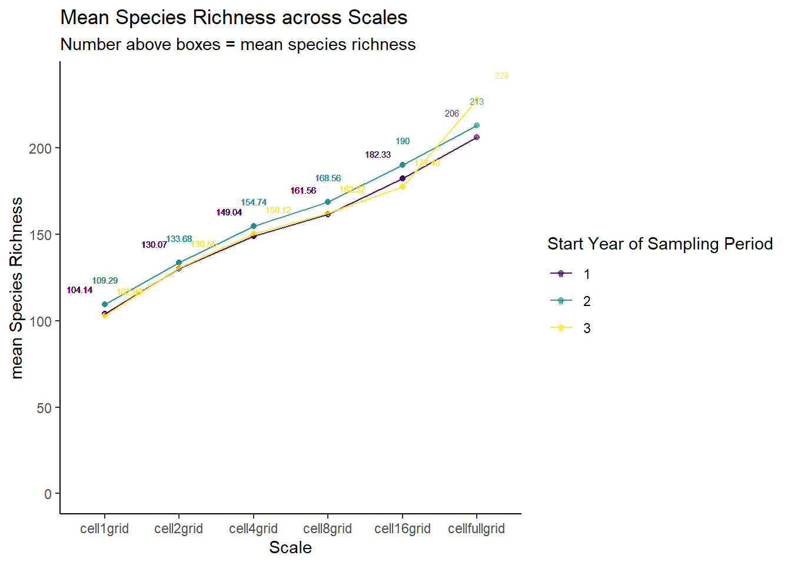
ggsave(plot = last_plot(), filename = paste0(out_path, "Figs/SpeciesRichness_PointLine.pdf"))Saving 7 x 5 in image# ================================= Some Plots ============================== #
# Species Richness map:
srm <- ggplot(data = grid_data_original)+
geom_sf(aes(fill = SR))+
theme_void()+
facet_grid(factor(tp)~.)+
scale_fill_viridis()
ggsave(filename = "SR_map.pdf",
path = paste0(out_path, "Figs/"),
device = cairo_pdf,
width = 210,
height = 297,
units = "mm")
# Effort map:
em <- ggplot(data = grid_data_original)+
geom_sf(aes(fill = effort))+
theme_void()+
facet_grid(factor(tp)~.)+
scale_fill_viridis()
ggsave(filename = "Effort_map.pdf",
path = paste0(out_path, "Figs/"),
device = cairo_pdf,
width = 210,
height = 297,
units = "mm")
# Panel plot of both:
sr_em <- grid.arrange(srm, em, ncol=2) 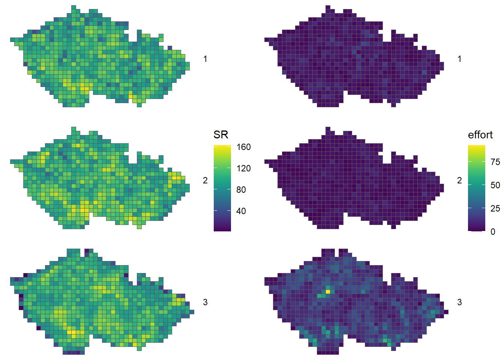
ggsave(plot = sr_em,
filename = "SR_Effort_maps_panel.pdf",
path = paste0(out_path, "Figs/"),
device = cairo_pdf,
width = 297,
height = 210,
units = "mm") # save as A4 landscape pdf
# Sampling effort ~ time boxplots
means <- aggregate(effort ~ tp, grid_data_original, mean)
grid_data_original %>%
ggplot(aes(y = effort, x= factor(tp)))+
geom_boxplot(fill = "lightgrey", outlier.color = "red")+
theme_classic()+
# Add mean
stat_summary(fun=mean, colour="darkred",
geom="point", shape=18,
size=3, show.legend=FALSE) +
geom_text(data = means, aes(label = round(effort,2), y = 0))+
xlab("Time Periods") +
ylab("Sampling effort (N cards)")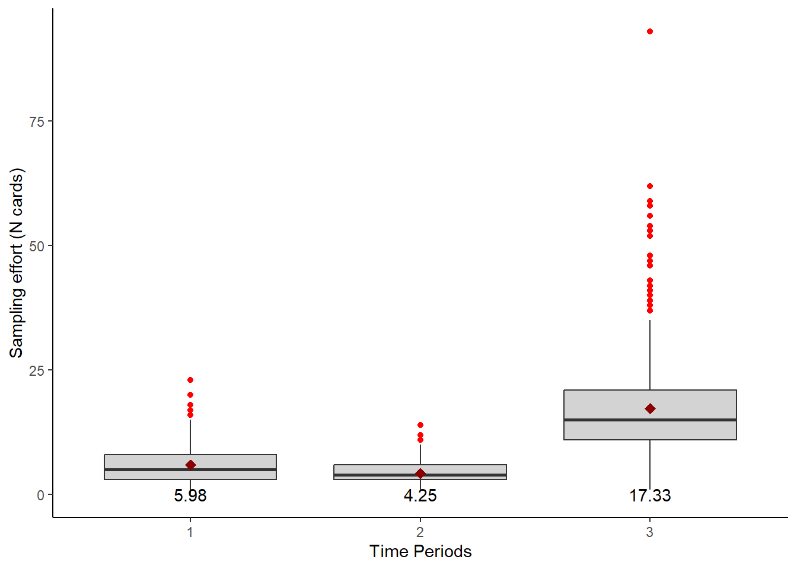
ggsave(filename = "Effort_time_boxplot.pdf",
path = paste0(out_path, "Figs/"),
width = 8,
height = 6)
# Species Richness ~ Effort scatter plot
ggplot(data = grid_data_original, aes(x = effort, y = SR, col = factor(tp)))+
geom_point()+
geom_smooth(method='lm')+
theme_classic()+
scale_color_viridis(discrete = T, alpha = 0.65)`geom_smooth()` using formula = 'y ~ x'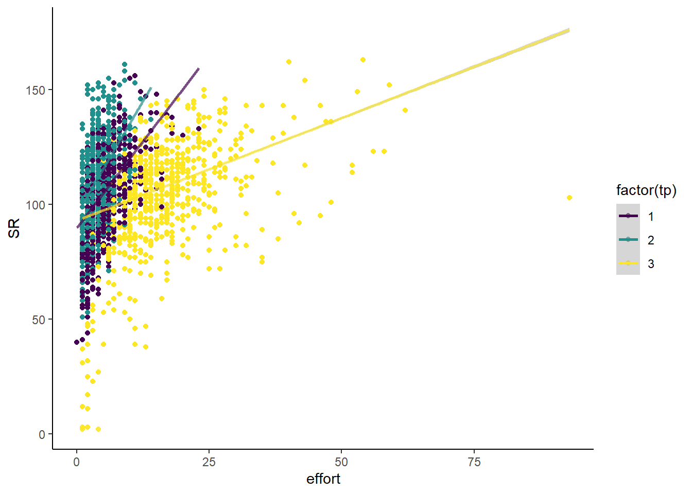
ggsave(filename = "SR_effort_plot.pdf",
path = paste0(out_path, "Figs/"),
width = 8,
height = 6)`geom_smooth()` using formula = 'y ~ x'# ////////////// Outlier removal //////////////// #
# Effort Map (without outliers)
em2 <- grid_data_original %>%
mutate(effort = case_when(effort > 30 ~ 30,
effort < 30 ~ effort)) %>%
ggplot()+
geom_sf(aes(fill = effort))+
theme_void()+
facet_grid(factor(tp)~.)+
scale_fill_viridis()
ggsave(filename = "Effort_map_outliers_removed.pdf",
path = paste0(out_path, "Figs/"),
device = cairo_pdf,
width = 210,
height = 297,
units = "mm")
# Panel plot of both:
sr_em2 <- grid.arrange(srm, em2, ncol=2) 
ggsave(plot = sr_em2,
filename = "SR_Effort_maps_panel_outliers_removed.pdf",
path = paste0(out_path, "Figs/"),
device = cairo_pdf,
width = 297,
height = 210,
units = "mm") # save as A4 landscape pdfScaling sampling effort
# Map: scale effort by time periods
# (between 0 and 1 for comparative reasons between groups)
tp1 <- grid_data_original %>%
select(cell_grouping, SR, effort, tp, cell_label) %>% unique() %>%
filter(cell_grouping == "cell1grid") %>%
filter(effort > 0) %>%
filter(tp == 1 | tp == 2) %>%
filter_at(vars(effort), any_vars(!is.na(.)))
tp1$effort_scaled <- rescale(tp1$effort, to = c(0, 1))
tp2 <- grid_data_original %>%
select(cell_grouping, SR, effort, tp, cell_label) %>% unique() %>%
filter(cell_grouping == "cell1grid") %>%
filter(effort > 0) %>%
filter(tp == 1 | tp == 2) %>%
filter_at(vars(effort), any_vars(!is.na(.)))
tp2$effort_scaled <- rescale(tp2$effort, to = c(0, 1))
tp3 <- grid_data_original %>%
select(cell_grouping, SR, effort, tp, cell_label) %>% unique() %>%
filter(cell_grouping == "cell1grid") %>%
filter(effort > 0) %>%
filter(tp == 3) %>%
filter_at(vars(effort), any_vars(!is.na(.)))
tp3$effort_scaled <- rescale(tp3$effort, to = c(0, 1))
effort_scaled_df <- rbind(tp1, tp2, tp3)
effort_scaled_df %>%
ggplot(aes(x=log(effort_scaled)))+
geom_density()+
facet_wrap(tp~.)Warning: Removed 181 rows containing non-finite values (`stat_density()`).
## Map the scaled scampling effort:
effort_scaled_df %>% group_by(tp) %>%
ggplot()+
geom_sf(aes(fill = log(effort_scaled)))+
theme_void()+
facet_grid(factor(tp)~.)+
scale_fill_viridis() 
ggsave(filename = "Effort_map_scaled.pdf",
path = paste0(out_path, "Figs/"),
device = cairo_pdf,
width = 210,
height = 297,
units = "mm")
# How does sampling effort scale? =========================================== #
presence_data %>% ungroup() %>%
group_by(tp, cell_grouping) %>%
select(effort) %>%
get_summary_stats(type = "mean_sd")Adding missing grouping variables: `tp`, `cell_grouping`# A tibble: 18 × 6
tp cell_grouping variable n mean sd
<int> <fct> <fct> <dbl> <dbl> <dbl>
1 1 cell1grid effort 65400 5.98 3.44
2 1 cell2grid effort 22892 20.9 9.48
3 1 cell4grid effort 7452 74.3 33.3
4 1 cell8grid effort 2908 213. 141.
5 1 cell16grid effort 1094 608. 273.
6 1 cellfullgrid effort 206 3526 0
7 2 cell1grid effort 68632 4.25 2.24
8 2 cell2grid effort 23528 15.1 6.55
9 2 cell4grid effort 7737 53.8 22.8
10 2 cell8grid effort 3034 154. 99.0
11 2 cell16grid effort 1140 439. 196.
12 2 cellfullgrid effort 213 2554 0
13 3 cell1grid effort 69106 17.3 9.82
14 3 cell2grid effort 23761 63.5 30.5
15 3 cell4grid effort 7806 228. 105.
16 3 cell8grid effort 3084 667. 433.
17 3 cell16grid effort 1242 1798. 825.
18 3 cellfullgrid effort 228 10918 0 presence_data %>%
ungroup() %>%
select(tp, cell_grouping, effort) %>%
unique() %>%
group_by(tp, cell_grouping) %>%
summarise(n= n(),
min_effort = min(effort),
mean_effort = mean(effort),
sd_effort = sd(effort),
max_effort = max(effort))`summarise()` has grouped output by 'tp'. You can override using the `.groups`
argument.# A tibble: 18 × 7
# Groups: tp [3]
tp cell_grouping n min_effort mean_effort sd_effort max_effort
<int> <fct> <int> <dbl> <dbl> <dbl> <dbl>
1 1 cell1grid 21 0 10.2 6.55 23
2 1 cell2grid 43 2 23.3 13.0 48
3 1 cell4grid 40 2 67.4 35.8 120
4 1 cell8grid 18 6 196. 149. 411
5 1 cell16grid 6 91 588. 306. 882
6 1 cellfullgrid 1 3526 3526 NA 3526
7 2 cell1grid 13 1 7.08 4.03 14
8 2 cell2grid 31 1 16.2 9.38 34
9 2 cell4grid 36 1 52.2 26.3 97
10 2 cell8grid 18 1 142. 104. 289
11 2 cell16grid 6 100 426. 219. 712
12 2 cellfullgrid 1 2554 2554 NA 2554
13 3 cell1grid 53 1 29.0 19.1 93
14 3 cell2grid 91 2 65.9 39.1 188
15 3 cell4grid 45 2 206. 122. 481
16 3 cell8grid 19 1 575. 465. 1224
17 3 cell16grid 7 1 1560. 1043. 2565
18 3 cellfullgrid 1 10918 10918 NA 10918presence_data %>%
ungroup() %>%
select(tp, cell_grouping, effort) %>%
filter(cell_grouping != "cellfullgrid") %>%
unique() %>%
group_by(tp, cell_grouping) %>%
mutate(mean_effort = mean(effort)) %>%
ggplot(aes(y = effort, x = cell_grouping, fill = as.factor(tp))) +
geom_boxplot(alpha = 0.6) +
ylab("Sampling Effort (N Collectors)") +
xlab("Scale") +
theme_classic() +
scale_fill_viridis(discrete = TRUE, alpha = 0.7) +
labs(fill = "Start Year of Sampling Period",
title = "Scaling of Sampling Effort across Sampling Periods",
subtitle = "Number above boxes = mean sampling effort") +
scale_y_continuous(breaks = seq(0, max(presence_data$effort), by = 100)) +
geom_text(aes(label = round(mean_effort, 2), y = mean_effort),
vjust = -15, size = 2, position = position_dodge(width = 0.75)) effort_scaled_df %>%
ungroup() %>%
select(tp, effort_scaled) %>%
unique() %>%
group_by(tp) %>%
mutate(mean_effort_scaled = mean(effort_scaled)) %>%
ggplot(aes(y = log(effort_scaled), x = factor(tp), fill = factor(tp))) +
geom_boxplot(alpha = 0.6) +
ylab("Sampling effort scaled") +
xlab("Sampling period") +
theme_classic() +
scale_fill_viridis(discrete = TRUE, alpha = 0.7) +
labs(fill = "Sampling Period",
title = "Scaling of Sampling Effort across Sampling Periods",
subtitle = "Number above boxes = mean sampling effort scaled") +
geom_text(aes(label = round(mean_effort_scaled, 2), y = mean_effort_scaled),
vjust = 1.15, size = 5, position = position_dodge(width = 0.75))Warning: Removed 94 rows containing non-finite values (`stat_boxplot()`).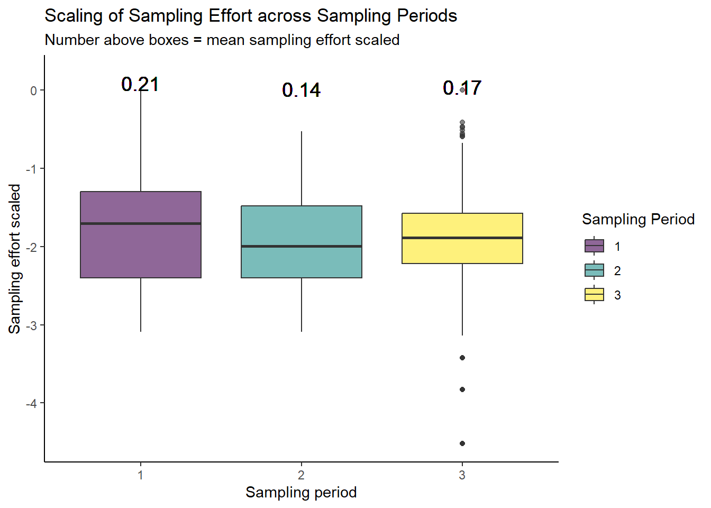
ggsave(plot = last_plot(), filename = paste0(out_path, "Figs/SamplingEffort_boxplot.pdf"), width = 8, height = 6)Warning: Removed 94 rows containing non-finite values (`stat_boxplot()`).4.2 Quality checks
Telfer : (quote from Sparta Vignette: https://github.com/BiologicalRecordsCentre/sparta/blob/master/vignettes/sparta_vignette.Rmd)
Telfer’s change index is designed to assess the relative change in range size of species between two time periods (Telfer et al, 2002). This is a simple method that is robust but has low power to detect trends where they exist. While this method is designed to compare two time periods, sparta can take many time periods and will complete all pairwise comparisons.
# both unbiased
results <- sparta::dataDiagnostics(taxa = presence_data$verbatim_name,
site = presence_data$cell_label,
time_period = presence_data$tp,
progress_bar = FALSE)Warning in errorChecks(taxa = taxa, site = site, time_period = time_period):
71777 out of 309463 observations will be removed as duplicates
## Linear model outputs ##
There is no detectable change in the number of records over time:
Estimate Std. Error t value Pr(>|t|)
(Intercept) 97879.33 2113.413 46.313400 0.01374377
time_period 2637.50 978.320 2.695948 0.22612421
There is no detectable change in list lengths over time:
Estimate Std. Error z value Pr(>|z|)
(Intercept) 4.7913501020 0.005441331 880.547507 0.0000000
time_period -0.0004810072 0.002504515 -0.192056 0.8476983# Telfer:
telfer_results <- sparta::telfer(taxa = presence_data$verbatim_name,
site = presence_data$cell_label,
time_period = presence_data$tp,
minSite = 2)Warning in errorChecks(taxa = taxa, site = site, time_period = time_period, :
71777 out of 309463 observations will be removed as duplicatestelfer_results2 <- telfer_results %>%
select(taxa, Telfer_1_2, Telfer_2_3, Telfer_1_3) %>%
rename(verbatim_name = taxa)
head(telfer_results) taxa Nsite_1.x Nsite_2.x Telfer_1_2 Nsite_1.y Nsite_3.x
1 Accipiter gentilis 624 606 -1.4023416 624 508
2 Accipiter nisus 616 631 0.6178684 616 589
3 Acrocephalus arundinaceus 338 358 -0.2851160 338 392
4 Acrocephalus dumetorum NA NA NA NA NA
5 Acrocephalus melanopogon NA NA NA NA NA
6 Acrocephalus paludicola NA NA NA NA NA
Telfer_1_3 Nsite_2.y Nsite_3.y Telfer_2_3
1 -1.8925836 606 508 -1.906786
2 -0.5529519 631 589 -1.501409
3 0.2094154 358 392 0.612922
4 NA NA NA NA
5 NA NA NA NA
6 NA 16 10 -1.003948ggp1 <- ggplot(data = telfer_results) +
geom_histogram(aes(x = Telfer_1_2), bins = 20,
bg = "lightgrey", col = "darkgrey")+
theme_classic() +
xlim(-4, 4)+
ylim(0, 85)+
# Add line for mean:
geom_vline(xintercept = mean(telfer_results$Telfer_1_2, na.rm=T),
col = "red",
lwd = 1) +
# Add text for mean:
annotate("text",
x = mean(telfer_results$Telfer_1_2, na.rm=T) -2.5,
y = mean(telfer_results$Telfer_1_2, na.rm=T) +80,
label = paste("Mean =",
round(mean(telfer_results$Telfer_1_2, na.rm=T),
3)
),
col = "red",
size = 6)+
# Add line for mean:
geom_vline(xintercept = median(telfer_results$Telfer_1_2, na.rm=T),
col = "orange",
lwd = 1) +
# Add text for mean:
annotate("text",
x = mean(telfer_results$Telfer_1_2, na.rm=T) -2.5,
y = mean(telfer_results$Telfer_1_2, na.rm=T) +70,
label = paste("Median =",
round(median(telfer_results$Telfer_1_2, na.rm=T),
3)
),
col = "orange",
size = 6)
ggp2 <- ggplot(data = telfer_results) +
geom_histogram(aes(x = Telfer_2_3), bins = 20,
bg = "lightgrey", col = "darkgrey")+
theme_classic() +
# Add line for mean
geom_vline(xintercept = mean(telfer_results$Telfer_2_3, na.rm=T),
col = "red",
lwd = 1) +
xlim(-4, 4)+
ylim(0, 85)+
# Add text for mean
annotate("text",
x = mean(telfer_results$Telfer_2_3, na.rm=T) -2.5,
y = mean(telfer_results$Telfer_2_3, na.rm=T) +80,
label = paste("Mean =",
round(
mean(telfer_results$Telfer_2_3, na.rm=T),
3)
),
col = "red",
size = 6)+
# Add line for mean:
geom_vline(xintercept = median(telfer_results$Telfer_1_2, na.rm=T),
col = "orange",
lwd = 1) +
# Add text for mean:
annotate("text",
x = mean(telfer_results$Telfer_2_3, na.rm=T) -2.5,
y = mean(telfer_results$Telfer_2_3, na.rm=T) +70,
label = paste("Median =",
round(median(telfer_results$Telfer_2_3, na.rm=T),
3)
),
col = "orange",
size = 6)
ggp3 <- ggplot(data = telfer_results) +
geom_histogram(aes(x = Telfer_1_3), bins = 20,
bg = "lightgrey", col = "darkgrey")+
theme_classic() +
# Add line for mean:
geom_vline(xintercept = mean(telfer_results$Telfer_1_3, na.rm=T),
col = "red",
lwd = 1) +
xlim(-4, 4)+
ylim(0, 85)+
annotate("text", # Add text for mean
x = mean(telfer_results$Telfer_1_3, na.rm=T) -2.5,
y = mean(telfer_results$Telfer_1_3, na.rm=T) +80,
label = paste("Mean =",
round(mean(telfer_results$Telfer_1_3, na.rm=T),
3)
),
col = "red",
size = 6)+
# Add line for mean:
geom_vline(xintercept = median(telfer_results$Telfer_1_3, na.rm=T),
col = "orange",
lwd = 1) +
# Add text for mean:
annotate("text", # Add text for mean
x = mean(telfer_results$Telfer_1_3, na.rm=T) -2.5,
y = mean(telfer_results$Telfer_1_3, na.rm=T) +70,
label = paste("Median =",
round(median(telfer_results$Telfer_1_3, na.rm=T),
3)
),
col = "orange",
size = 6)
ggp_telfer <- grid.arrange(ggp1, ggp2, ggp3)Warning: Removed 38 rows containing non-finite values (`stat_bin()`).Warning: Removed 31 rows containing non-finite values (`stat_bin()`).Warning: Removed 36 rows containing non-finite values (`stat_bin()`).
#plot(ggp_telfer)
ggsave(ggp_telfer, filename = paste0(out_path, "Figs/Telfer_hist.pdf"), width = 8, height = 8)5. Occupancy calculation
There are several ways we could calculate the occupancy.
counting the number of occupied cells and calculating the proportion of all cells that were sampled
Summing the areas of all occupied cells and calculating the proportion from the whole sampled area
AOO based on IUCN standards: \(AOO = Nr.ofoccupied cells * area of single a cell\)
Modeling occupancy using occupancy-detection models
Question: Do all of these yield the same measure for fractal dimension?
Anyway, here we calculate both (1), (2) and (3). (4) Will be done at a later stage of my PhD
occ_data_list <- list()
# We run the loop for each spatial grain (N = 8)
for (i in seq_along(grid_list)){
# subset the grid_list and work on a single spatial grain:
map_atlas <- grid_list[[i]]
# Calculate total sampled area per time period:
map_atlas <- map_atlas %>% mutate(Total_area1 = sum(map_atlas$area1s),
Total_area2 = sum(map_atlas$area2s),
Total_area3 = sum(map_atlas$area3s))
# Calculate total number of sampled cells per time period:
Total_Ncells1 <- map_atlas %>% filter(area1s > 0) %>%
mutate(Total_Ncells1 = length(unique(cell_label))) %>%
pull(Total_Ncells1) %>% unique()
Total_Ncells2 <- map_atlas %>% filter(area2s > 0) %>%
mutate(Total_Ncells2 = length(unique(cell_label))) %>%
pull(Total_Ncells2) %>% unique()
Total_Ncells3 <- map_atlas %>% filter(area3s > 0) %>%
mutate(Total_Ncells3 = length(unique(cell_label))) %>%
pull(Total_Ncells3) %>% unique()
Total_Ncells <- data.frame(cell_grouping = unique(map_atlas$cell_grouping),
Total_Ncells1, Total_Ncells2, Total_Ncells3)
map_atlas <- merge(map_atlas, Total_Ncells)
map_atlas %>%
pivot_longer(cols=c('Total_Ncells1', 'Total_Ncells2', 'Total_Ncells3'),
names_to='year',
values_to='Total_N_cells')
# subset the presence/absence data to the current spatial grain:
pres_data <- presence_data %>%
filter(cell_grouping == unique(map_atlas$cell_grouping))
# Merge sampled and unsampled cells for calculations:
pres_data_full <- merge(pres_data, map_atlas,
by = intersect(names(pres_data), names(map_atlas)),
all = T)
pres_data_full <- unique(pres_data_full)
# Reduce columns needed for analysis:
pres_data_full_reduced <- pres_data_full %>%
ungroup() %>%
mutate(
area_sampled = case_when(
tp == 1 ~ area1s,
tp == 2 ~ area2s,
tp == 3 ~ area3s),
area_c = case_when(
tp == 1 ~ area_cropped,
tp == 2 ~ area_cropped,
tp == 3 ~ area_cropped),
Total_area =case_when(
tp == 1 ~ Total_area1,
tp == 2 ~ Total_area2,
tp == 3 ~ Total_area3),
Total_Ncells = case_when(
tp == 1 ~ Total_Ncells1,
tp == 2 ~ Total_Ncells2,
tp == 3 ~ Total_Ncells3)) %>%
select(verbatim_name, tp, cell_grouping, cell_label,
area_sampled, area_c, Total_area, Total_Ncells) %>%
filter_all(any_vars(!is.na(.)))
## ========================================================================= ##
## ========================== Calculate Occupancy ========================= ##
## ========================================================================= ##
occ_data <- pres_data_full_reduced %>%
ungroup() %>%
# Remove unsampled cells:
filter(!is.na(verbatim_name)) %>%
# Necessary grouping to calculate occupancy:
group_by(verbatim_name, tp, cell_grouping) %>% unique() %>%
# Calculate Occupancy:
mutate(occupancy_area = sum(area_sampled)) %>%
mutate(occupancy_Ncells = length(unique(cell_label))) %>%
# Calculate AOO:
mutate(AOO = occupancy_Ncells * mean(area_sampled)) %>%
# Calculate relative Occupancy:
mutate(relative_occupancy_area = occupancy_area/Total_area) %>%
mutate(relative_occupancy_Ncells = occupancy_Ncells/Total_Ncells) %>%
# Round values to 2 digits after the comma:
mutate(relative_occupancy_area = round(relative_occupancy_area, 3)) %>%
mutate(relative_occupancy_Ncells = round(relative_occupancy_Ncells, 3)) %>%
# Remove duplicated rows:
unique()
# save to list:
occ_data_list[[i]] <- occ_data
}
# Bind to one dataframe:
occ_data_full_df <- plyr::rbind.fill(occ_data_list, fill=T)
# occ_data_full_df %>% filter_all(any_vars(is.na(.)))
# create scale column as a fraction of the full country:
occ_data_full_df <- occ_data_full_df %>% mutate(
scale = case_when(
cell_grouping == "cell1grid" ~ 1/32,
cell_grouping == "cell2grid" ~ 1/16,
cell_grouping == "cell4grid" ~ 1/8,
cell_grouping == "cell8grid" ~ 1/4,
cell_grouping == "cell16grid" ~ 1/2 ,
cell_grouping == "cellfullgrid" ~ 1)) %>% unique()
gc() used (Mb) gc trigger (Mb) max used (Mb)
Ncells 6399566 341.8 19493498 1041.1 19493498 1041.1
Vcells 54211304 413.6 107565618 820.7 107565610 820.7save.image(paste0(out_path, "Scale_Area_Curves_Occu_calc.RData"))occ_data_full_df %>% filter(cell_grouping == "cell1grid") %>%
ggplot(aes(y = AOO, x = factor(tp), col = factor(verbatim_name)),
show.legend = F)+
geom_point( show.legend = F)+
geom_line(aes(group = verbatim_name), show.legend = F, lwd = 1.2)+
theme(legend.position = "none")+
theme_classic()+
scale_color_viridis(discrete = T)
## Some checks: ========================================================================================== ####
par(mfrow = c(2,2))
occ_data_full_df %>%
filter(cell_grouping == "cell1grid") %>%
ggplot()+
geom_point(aes(y = occupancy_area, x = occupancy_Ncells,
col = factor(tp)))+
theme_classic()+
scale_color_viridis(discrete = T)
occ_data_full_df %>%
filter(cell_grouping == "cell1grid") %>%
ggplot()+
geom_point(aes(y = relative_occupancy_area, x = relative_occupancy_Ncells,
col = factor(tp)))+
theme_classic()+
scale_color_viridis(discrete = T)
occ_data_full_df %>%
filter(cell_grouping == "cell1grid") %>%
ggplot()+
geom_point(aes(y = occupancy_Ncells, x = relative_occupancy_Ncells,
col = factor(tp)))+
theme_classic()+
scale_color_viridis(discrete = T)
occ_data_full_df %>%
select(area_sampled, scale, tp) %>%
distinct() %>%
ggplot()+
geom_point(aes(y = log(area_sampled) , x = log(scale),
col = factor(tp)))+
theme_classic()+
scale_color_viridis(discrete = T)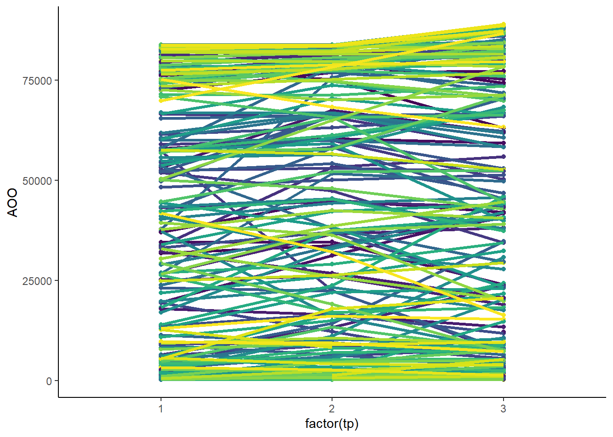
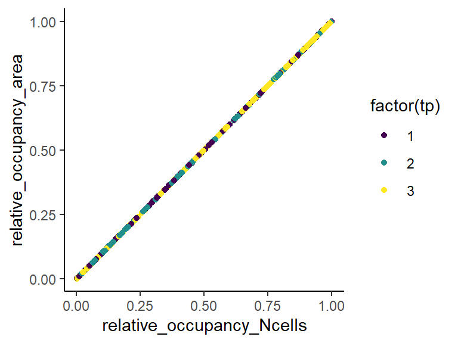
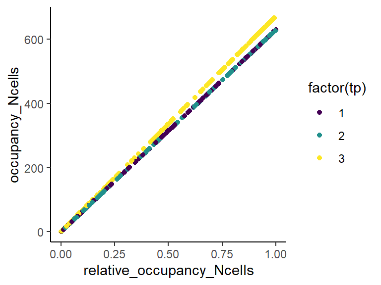
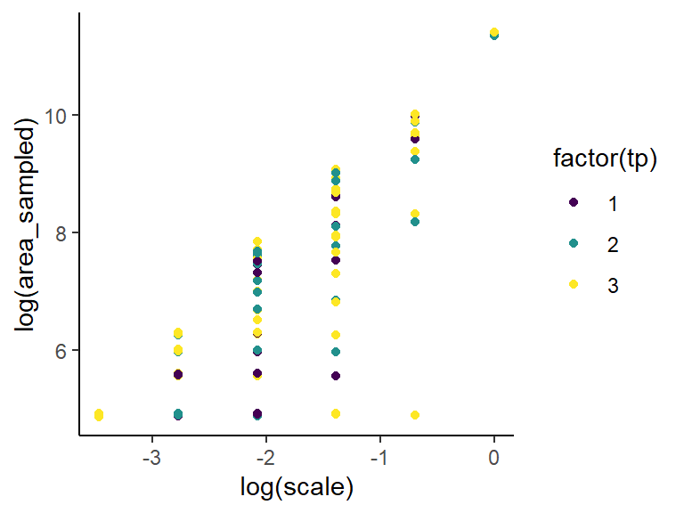
5.2 Modeling Occupancy
myData <- presence_data %>%
filter(cell_grouping == "cell1grid") %>%
select(
tp, end_year, cell_label,
verbatim_name, cell_grouping, tp, time_periods,
effort, years
) %>%
unique()
# in sparta ==================================================================================
# myData <- myDataSubset2
taxa <- unique(myData$verbatim_name)
occ_data <- formatOccData(
myData$verbatim_name,
myData$cell_label,
myData$tp,
replicate = NULL,
closure_period = (myData$tp),
includeJDay = FALSE
)
occ_out <- occDetFunc(
taxa_name = taxa[1],
n_iterations = 50,
burnin = 15,
occDetdata = occ_data$occDetdata,
spp_vis = occ_data$spp_vis,
write_results = FALSE
)
occ_out <- occDetFunc(
taxa_name = taxa[1],
occDetdata = occ_data$occDetdata,
spp_vis = occ_data$spp_vis,
n_iterations = 50000,
burnin = 5000,
n_chains = 2
)
# did not converge:
## Error in x$Version : $ operator is invalid for atomic vectors
# Other options for the model:
occ_out <- NULL
results <- occ_out <- occDetFunc(
taxa_name = taxa[2],
occDetdata = occ_data$occDetdata,
spp_vis = occ_data$spp_vis,
n_iterations = 200,
write_results = F,
burnin = 15,
n_chains = 3,
thinning = 3,
seed = 123
)
occDetFunc(
taxa_name = taxa[1],
n_iterations = 50,
burnin = 15,
occDetdata = occ_data$occDetdata,
spp_vis = occ_data$spp_vis,
write_results = FALSE
)6.1 Scale-Area-Curves
\[n = n0 L^-FD\]
(-FD is exponent, Hausdorff dimension)
n0 is constant
number of occupied quadrates n and L (side length of quadrat)
FD=−ln(L)/ln(n0n)
FD = - (ln(n/n_0))/(- ln(L))
n_0 = intercept (b) ?????
n = AOO ??????
L = scale ?????
Hausdorff dimension: –> decoupled from topological dimension !!
D = lim r-> 0 (-log N(r)/log r)
N(r) is the smallest number of open balls needed to cover the set X
r -> 0 smallest radius of a ball needed to cover set X
Box-counting dimension:
\[ N(s) = cs^-.^ D \]
D = (Log(N1) – Log (N2))/ (log (1/s1) – log (1/s2))
D = - (log(N(s))/(log (s) + log (c) )
reformulate to: log(N(s)) = - D log (s) + log(c)
which is similar to linear equation: y = mx + b
s = scale where s = 1 is scale at which whole object is covered
We need at least 2 different scales
How fractal is the data?
The straighter the line, the more fractal it is.
The following analyses all depend on the assumption that species distributions are fractal, therefore we test it first by fitting a linear and a non-linear model and comparing AICc scores to determine which model better fits the data
dd <- occ_data_full_df %>%
select(
verbatim_name, tp, cell_grouping, scale,
Total_area, Total_Ncells,
AOO, occupancy_area, occupancy_Ncells,
relative_occupancy_area, relative_occupancy_Ncells
) %>%
filter(relative_occupancy_area < 1) %>% # exclude saturated scales
unique() %>%
filter_at(vars(c(cell_grouping, AOO, scale)), any_vars(!is.na(.)))
## Loop through years and species ###
AIC_list <- list()
m_df_all <- list()
m_df_all_years <- list()
for (y in seq_along(unique(dd$tp))) { # //// filter by year //// #
dd_temp <- dd %>% filter(tp == y)
for (i in seq_along(unique(dd$verbatim_name))) { # //// filter by taxa //// #
sp <- unique(dd$verbatim_name)[i]
model_dd <- dd %>%
filter(verbatim_name == sp)
m1 <- lm(log(AOO) ~ log(scale), data = model_dd)
m1$verbatim_name <- sp
# Calculate R-squared value
r_squared <- summary(m1)$r.squared
m_df1 <- data.frame(
verbatim_name = m1$verbatim_name,
m = m1$coefficients[2],
b = m1$coefficients[1],
tp = y,
r2 = summary(m1)$r.squared,
row.names = c("linear")
)
m_df1$D <- -m_df1$m
## Poly:
m2 <- lm(log(AOO) ~ poly(scale, 2), data = model_dd)
m2$verbatim_name <- sp
# Calculate R-squared value
r_squared <- summary(m2)$r.squared
m_df2 <- data.frame(
verbatim_name = m2$verbatim_name,
m = m2$coefficients[2],
b = m2$coefficients[1],
tp = y,
r2 = summary(m2)$r.squared,
row.names = c("poly")
)
m_df2$D <- -m_df2$m
# Model selection based on AICc ===================================== ####
models_list <- list(m1, m2)
AIC <- aictab(models_list, modnames = c("linear", "poly"))
AIC_tab <- as.data.frame(AIC, row.names = AIC$Modnames)
m_df3 <- rbind(m_df1, m_df2)
m_df3$Modnames <- rownames(m_df3)
m_df4 <- merge(m_df3, AIC_tab, all.x = T, by = "Modnames")
m_df_all[[i]] <- m_df4
# ### Work in Progress #####
# # Quick visual check of models:
# model_dd %>%
# select(verbatim_name, tp, AOO, scale) %>%
# distinct() %>%
# # Plotting the data points and fitted models
# ggplot(aes(x = log(scale), y = log(AOO), col = factor("Modnames"))) +
# geom_point() + # Add data points#
# geom_point(aes(x = log(scale), y = poly(AOO,2)),
# col = "red") + # Add data points
# geom_smooth(method = "lm", se = FALSE,
# method.args = list(formula = y ~ log(x)),
# col = "blue") + # Linear model (m1)
# geom_smooth( aes(y = predict(m2),
# col = "red")) + # Quadratic model (m2)
# scale_color_viridis(discrete = T)
# labs(title = "Comparison of Linear and Quadratic Models",
# x = "log(Scale)", y = "log(AOO)")
# #
}
m_df_all2 <- plyr::rbind.fill(m_df_all, fill = T)
m_df_all_years[[y]] <- m_df_all2
}
## Bind list elements to dataframe:
m_df_all_years2 <- plyr::rbind.fill(m_df_all_years, fill = T)## Compare linear vs. poly AICc selection
# round to 3 digits:
m_df_all2 <- m_df_all2 %>%
mutate(across(where(is.numeric), ~ round(., 3)))
# Model selection based on AICc and weight:
m_df_all2 %>%
group_by(factor(Modnames), tp) %>%
filter(Delta_AICc == 0) %>%
filter(AICcWt > 0.6) %>%
summarize(n=n(),
meanAICcWt = mean(AICcWt))`summarise()` has grouped output by 'factor(Modnames)'. You can override using
the `.groups` argument.# A tibble: 2 × 4
# Groups: factor(Modnames) [2]
`factor(Modnames)` tp n meanAICcWt
<fct> <dbl> <int> <dbl>
1 linear 3 226 0.948
2 poly 3 8 0.944m_df_all2 %>%
filter(Delta_AICc == 0) %>%
filter(factor(Modnames) == "poly") Modnames verbatim_name m b tp r2 D K AICc
1 poly Emberiza citrinella 0.009 11.397 3 0.725 -0.009 4 -64.579
2 poly Motacilla alba 0.030 11.380 3 0.584 -0.030 4 -53.003
3 poly Parus major 0.026 11.383 3 0.487 -0.026 4 -52.080
4 poly Turdus merula 0.025 11.384 3 0.419 -0.025 4 -51.458
5 poly Fringilla coelebs 0.025 11.384 3 0.441 -0.025 4 -51.660
6 poly Hirundo rustica 0.035 11.376 3 0.811 -0.035 4 -56.356
7 poly Scolopax rusticola 0.788 11.116 3 0.901 -0.788 4 -8.066
8 poly Cinclus cinclus 0.546 11.182 3 0.878 -0.546 4 -14.834
Delta_AICc ModelLik AICcWt LL Cum.Wt
1 0 1 1.000 16.290 1.000
2 0 1 1.000 10.502 1.000
3 0 1 1.000 10.040 1.000
4 0 1 1.000 9.729 1.000
5 0 1 1.000 9.830 1.000
6 0 1 1.000 12.178 1.000
7 0 1 0.892 10.890 0.892
8 0 1 0.659 14.274 0.659m_df_all2 %>% ggplot()+
geom_point(aes(x = Modnames, y = Delta_AICc, col = AICcWt))+
theme_classic()+
scale_color_viridis()
m_df_all2 %>% ggplot()+
geom_point(aes(x = AICcWt, y = Delta_AICc, col = AICcWt, pch = Modnames))+
theme_classic()+
scale_color_viridis()+
labs(title = "AICc-based model selectio: Linear vs. Poly",
subtitle = "to determine deviation from linear relationship \ni.e. deviation from fractal assumption")
# Which are the species that have a poly-relationship? =================== ####
poly_species <- m_df_all2 %>%
group_by( tp) %>%
filter(Delta_AICc == 0) %>%
filter(AICcWt > 0.6) %>%
filter(Modnames == "poly") %>% pull(verbatim_name) %>% unique()
presence_data_sf %>%
filter(verbatim_name %in% poly_species) %>%
filter(cell_grouping == "cell1grid") %>%
ggplot()+
geom_sf()+
geom_sf(data = grid_list[[1]], fill = "NA")+
facet_wrap(verbatim_name+tp~.)+
theme_void()
# occ_data_full_df %>%
# filter(verbatim_name %in% poly_species) %>%
# select(-c(cell_label, cell_grouping, area_sampled, area_c, Total_area, Total_Ncells)) %>%
# ggplot()+
# geom_point(aes(y = relative_occupancy_Ncells, x = Modnames))
# occ_data_full_df %>% filter(verbatim_name %in% poly_species) %>%
# ggplot(aes(x = log(scale), y = poly(AOO,2), col = verbatim_name, group=verbatim_name))+
# geom_point()+
# geom_smooth(method = "lm", formula = y ~ poly(x, 2), se = T, alpha = 0.5)+
# scale_color_viridis(discrete = T)+
# facet_wrap(verbatim_name~.)+
# theme_classic()+
# labs(title = "lm(log(AOO) ~ poly(scale, 2), data = model_dd)")
#
#
# occ_data_full_df %>% filter(verbatim_name %in% poly_species) %>%
# ggplot(aes(x = log(scale), y = log(AOO), col = verbatim_name))+
# geom_point()+
# geom_smooth(method = "lm", formula = y ~ poly(x, 2), se = T, alpha = 0.5)+
# scale_color_viridis(discrete = T)+
# facet_wrap(verbatim_name~.)+
# theme_classic()+
# labs(title = "lm(log(AOO) ~ poly(scale, 2), data = model_dd)")#load("~/GitHub/BEAST_General_Procedures/output/RData/Scale_Area_Curves.RData")
#| label: Extract slopes loop
taxa <- unique(dd$verbatim_name)
# create some empty lists:
p_list <- list()
m_list <- list()
m_df_all <- list()
m_df_all_years <- list()
## Loop for fractal calculations ============================================ #
for(y in seq_along(unique(dd$tp))){ # //// filter by year //// #
dd_temp <- dd %>% filter(tp == y)
dd_temp <- dd_temp %>%
filter_at(vars(c(cell_grouping, AOO)), any_vars(!is.na(.)))
for(i in seq_along(unique(dd_temp$verbatim_name))){ # //// filter by taxa //// #
dd_temp2 <- dd_temp %>%
filter(verbatim_name == unique(dd_temp$verbatim_name)[i])
m <- lm(log(AOO)~log(scale), data = dd_temp2)
m$verbatim_name <- taxa[i]
# Calculate R-squared value
r_squared <- summary(m)$r.squared
m_df <- data.frame(verbatim_name = m$verbatim_name,
m = m$coefficients[2],
b = m$coefficients[1],
tp = y,
r2 = summary(m)$r.squared)
m_df$D <- -m_df$m
# Collects all D and b values for all species from one time period
m_df_all[[i]]<- m_df
# Plot all species for one time period
p_list[[i]] <- dd_temp2 %>%
ggplot(aes(y=log(AOO), x = log(scale), col = factor(tp))) +
geom_point()+
geom_line(aes(group = tp))+
theme_classic() +
labs(title = paste0(taxa[i], "; time period:", dd$tp[y]),
subtitle = paste0("D=", round(m_df$D, 1)))
}
m_df_all2 <- plyr::rbind.fill(m_df_all, fill=T)
m_df_all_years[[y]] <- m_df_all2
}Warning in summary.lm(m): essentially perfect fit: summary may be unreliable
Warning in summary.lm(m): essentially perfect fit: summary may be unreliable## Assess model results:
m_df_all_years2 <- plyr::rbind.fill(m_df_all_years, fill=T)
# Add fractal dimensions to the occu data:
occ_data_full_df <- merge(occ_data_full_df, m_df_all_years2,
by=c("tp", "verbatim_name"), all = T) %>%
unique()
occ_data_full_df <- merge(occ_data_full_df, telfer_results2,
by=c("verbatim_name"), all = T) %>%
distinct()
dd %>%
ggplot(aes(y = log(AOO), x = log(scale)), col = factor(tp))+
geom_jitter(aes(col = factor(tp)))+
geom_smooth(aes(group = tp), method = lm, formula = y ~ x )
ggplot(dd, aes(y = log(AOO), x = log(scale), col = factor(tp))) +
geom_jitter() +
geom_smooth(method = "lm", formula = y ~ x, aes(group = tp))+
scale_color_viridis(discrete=T)
dd %>%
ggplot(aes(y = log(AOO), x = log(scale)), col = factor(tp))+
geom_jitter(aes(col = factor(tp)))+
geom_smooth(aes(col = factor(tp)), method = "lm", formula = y ~ x )+
scale_color_viridis(discrete=T)
# occ_data_full_df %>% group_by(verbatim_name, tp) %>% select(verbatim_name, tp, AOO, b, scale) %>% distinct() %>%
# summarize(FD = - (log(AOO/b))/(log(scale)))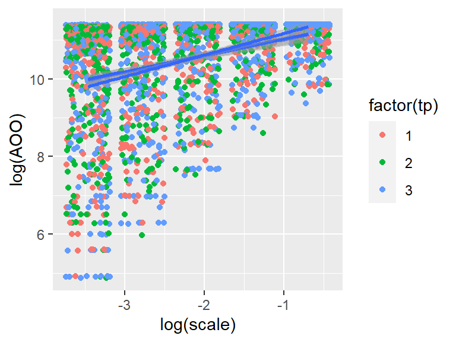
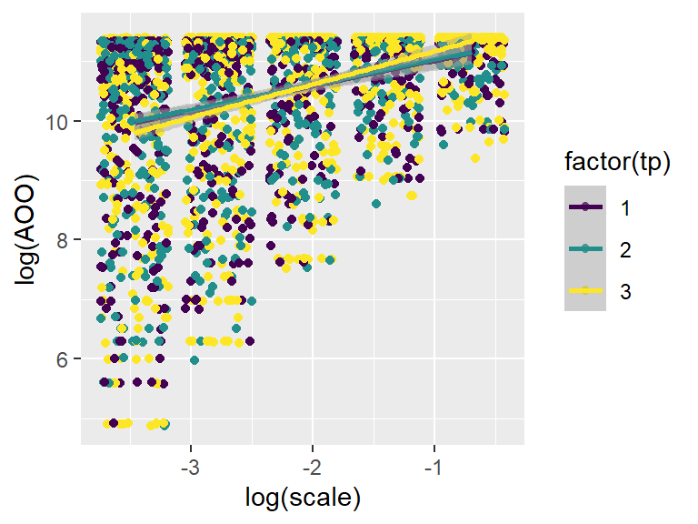
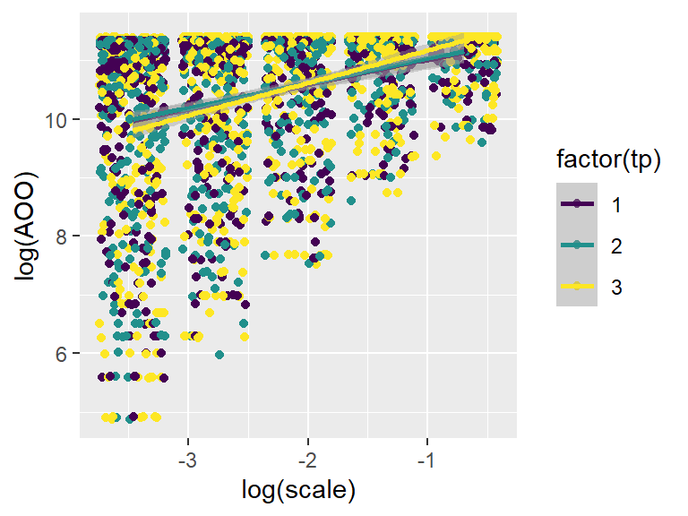
6.2 Example species: Exploring occupancies
# Which species have low occupancy at the smallest grid size?
low_occu_sp <- occ_data_full_df %>% filter(cell_grouping == "cell1grid") %>%
select(verbatim_name, relative_occupancy_area, tp) %>%
filter(relative_occupancy_area <= 0.15) %>%
pull(unique(verbatim_name)) %>%
unique()
low_occu <- occ_data_full_df %>%
filter(cell_grouping == "cell1grid") %>%
filter(verbatim_name %in% low_occu_sp) %>%
select(verbatim_name, relative_occupancy_area, tp) %>%
distinct() %>%
pivot_wider(names_from = tp,
names_prefix = "rel_occu",
values_from = relative_occupancy_area)
low_occu_sp_sample <- occ_data_full_df %>%
filter(verbatim_name %in% c(sample(low_occu_sp, 9))) %>%
pull(verbatim_name) %>%
unique()
low_occu_reduced <- occ_data_full_df %>%
filter(cell_grouping == "cell1grid") %>%
filter(verbatim_name %in% low_occu_sp) %>%
select(verbatim_name, relative_occupancy_area, tp) %>%
distinct() %>%
pivot_wider(names_from = tp,
names_prefix = "rel_occu",
values_from = relative_occupancy_area) %>%
na.omit() # remove NAs
# Which species have high occupancy at the smallest grid size?
high_occu_sp <- occ_data_full_df %>%
filter(cell_grouping == "cell1grid") %>%
select(verbatim_name, relative_occupancy_area, tp) %>%
filter(relative_occupancy_area >= 0.99) %>%
pull(unique(verbatim_name)) %>%
unique()
high_occu <- occ_data_full_df %>%
filter(cell_grouping == "cell1grid") %>%
filter(verbatim_name %in% high_occu_sp) %>%
select(verbatim_name, relative_occupancy_area, tp) %>%
distinct() %>%
pivot_wider(names_from = tp,
names_prefix = "rel_occu",
values_from = relative_occupancy_area)
high_occu_sp_sample <- occ_data_full_df %>%
filter(verbatim_name %in% c(sample(high_occu_sp, 9))) %>%
pull(verbatim_name) %>%
unique()
spec <- c(low_occu_sp_sample, high_occu_sp_sample)1.1) Which species are very common (> 0.9 relative occupancy at smallest grain)
# Plot the map of some example species:
presence_data_sf %>%
filter(verbatim_name %in% high_occu_sp_sample) %>%
filter(cell_grouping == "cell1grid") %>%
ggplot()+
geom_sf()+
geom_sf(data = grid_list[[1]], fill = "NA")+
facet_wrap(verbatim_name+tp~.)+
theme_void()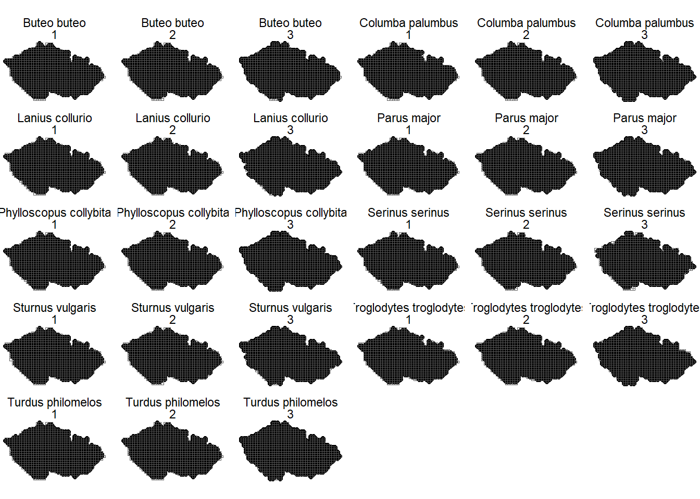
ggsave(filename = "high_occu.pdf",
path = paste0(out_path, "Figs"),
device = cairo_pdf,
height = 210,
width = 297,
units = "mm")1.2) Which species are very rare (< 0.15 relative occupancy at smallest grain)
# Plot the map of some example species ================================== ####
presence_data_sf %>%
filter(verbatim_name %in% low_occu_sp_sample) %>%
filter(cell_grouping == "cell1grid") %>%
ggplot()+
geom_sf()+
geom_sf(data = grid_list[[1]], fill = "NA")+
facet_wrap(verbatim_name+tp~., ncol = 6)+
theme_void()
ggsave(filename = "low_occu.pdf",
path = paste0(out_path, "Figs"),
device = cairo_pdf,
height = 210,
width = 297,
units = "mm")
### Other scales:
presence_data_sf_allgrains %>%
filter(verbatim_name %in%low_occu_sp_sample) %>%
filter(cell_grouping == "cell2grid") %>%
ggplot()+
geom_sf()+
geom_sf(data = grid_list[[2]], fill = "NA")+
facet_wrap(verbatim_name+tp~.)+
theme_void()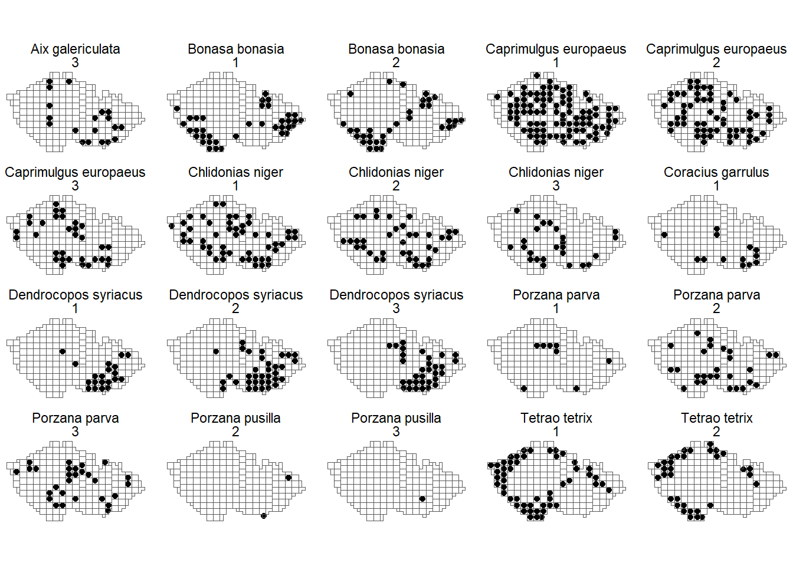
presence_data_sf_allgrains %>%
filter(verbatim_name %in%low_occu_sp_sample) %>%
filter(cell_grouping == "cell4grid") %>%
ggplot()+
geom_sf()+
geom_sf(data = grid_list[[3]], fill = "NA")+
facet_wrap(verbatim_name+tp~.)+
theme_void()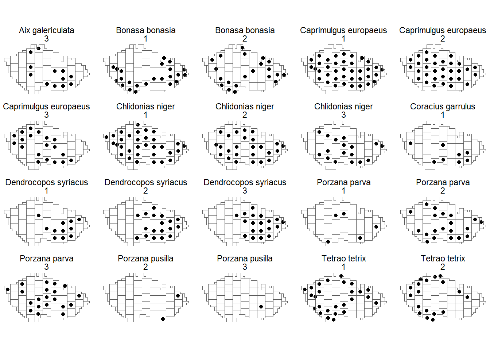
presence_data_sf_allgrains %>%
filter(verbatim_name %in%low_occu_sp_sample) %>%
filter(cell_grouping == "cell8grid") %>%
ggplot()+
geom_sf()+
geom_sf(data = grid_list[[4]], fill = "NA")+
facet_wrap(verbatim_name+tp~.)+
theme_void()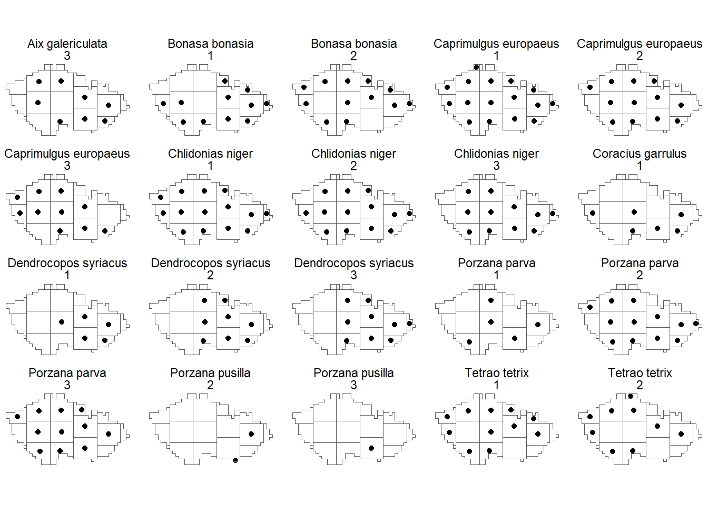
presence_data_sf_allgrains %>%
filter(verbatim_name %in%low_occu_sp_sample) %>%
filter(cell_grouping == "cell16grid") %>%
ggplot()+
geom_sf()+
geom_sf(data = grid_list[[5]], fill = "NA")+
facet_wrap(verbatim_name+tp~.)+
theme_void()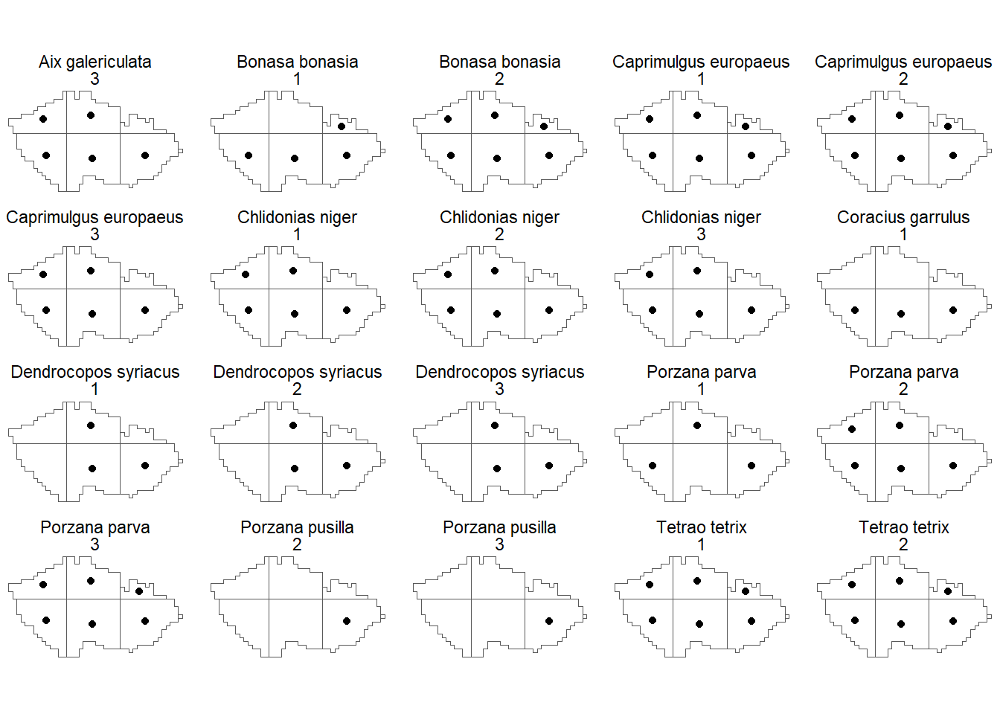
presence_data_sf_allgrains %>%
filter(verbatim_name %in%low_occu_sp_sample) %>%
filter(cell_grouping == "cellfullgrid") %>%
ggplot()+
geom_sf()+
geom_sf(data = grid_list[[6]], fill = "NA")+
facet_wrap(verbatim_name+tp~.)+
theme_void()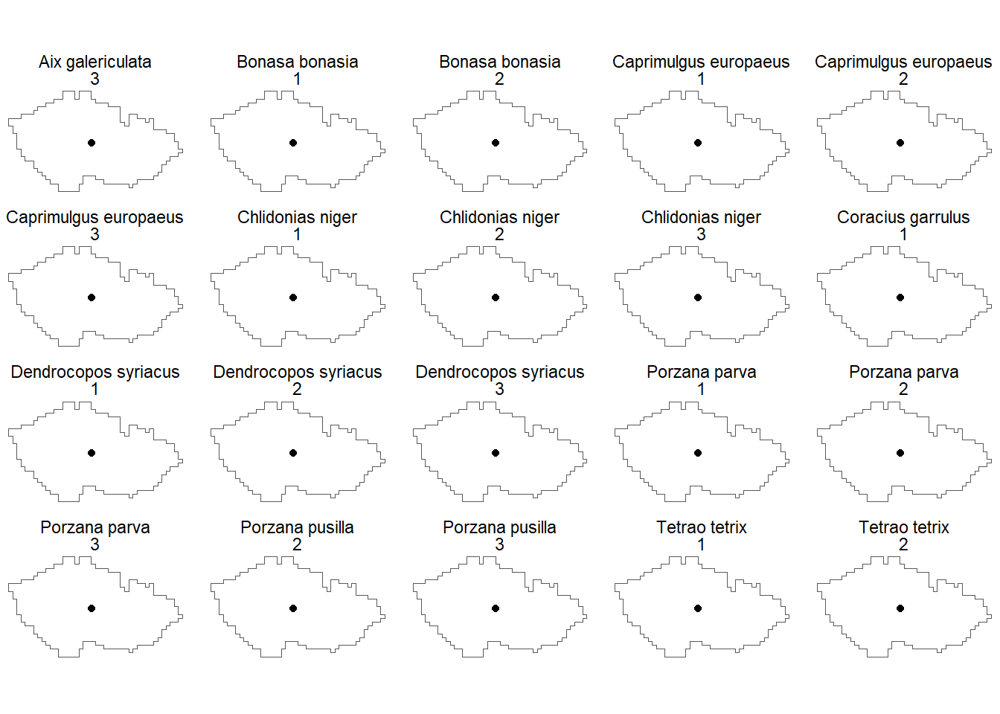
###
presence_data_sf %>%
filter(verbatim_name %in%low_occu_sp_sample) %>%
filter(cell_grouping == "cell1grid") %>% filter(tp == 3) %>%
ggplot()+
geom_sf()+
geom_sf(data = grid_list[[1]], fill = "NA")+
facet_wrap(verbatim_name~., ncol = 3)+
theme_void()+
labs(title = "Low occurrence species (tp = 3)")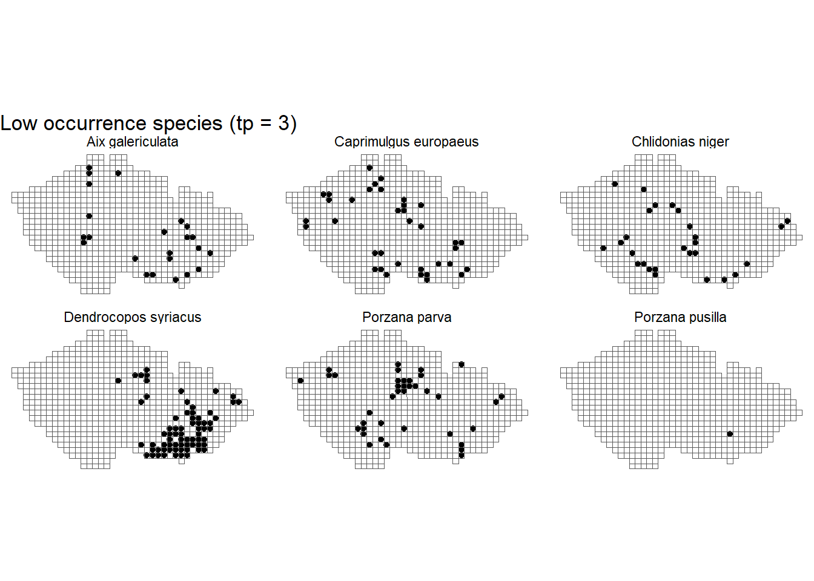
ggsave(paste0(out_path, "Figs/low_occu_year3.png"))Saving 7 x 5 in image2.1) How do the results of the different ways to calculate occupancy differ?
insights from the scale area curves:
occ_data_full_df %>%
filter(verbatim_name %in% spec) %>%
ggplot(aes(y = log(AOO), x = log(scale), col = factor(tp)))+
geom_point()+
geom_line()+
theme_classic()+
scale_color_viridis(discrete = T)+
facet_wrap(verbatim_name~.)+
annotate("text", label = paste(), size = 4, x = 15, y = 5)+
labs(title = "Low and High occurrence species")Warning: Removed 5 rows containing missing values (`geom_point()`).Warning: Removed 2 rows containing missing values (`geom_line()`).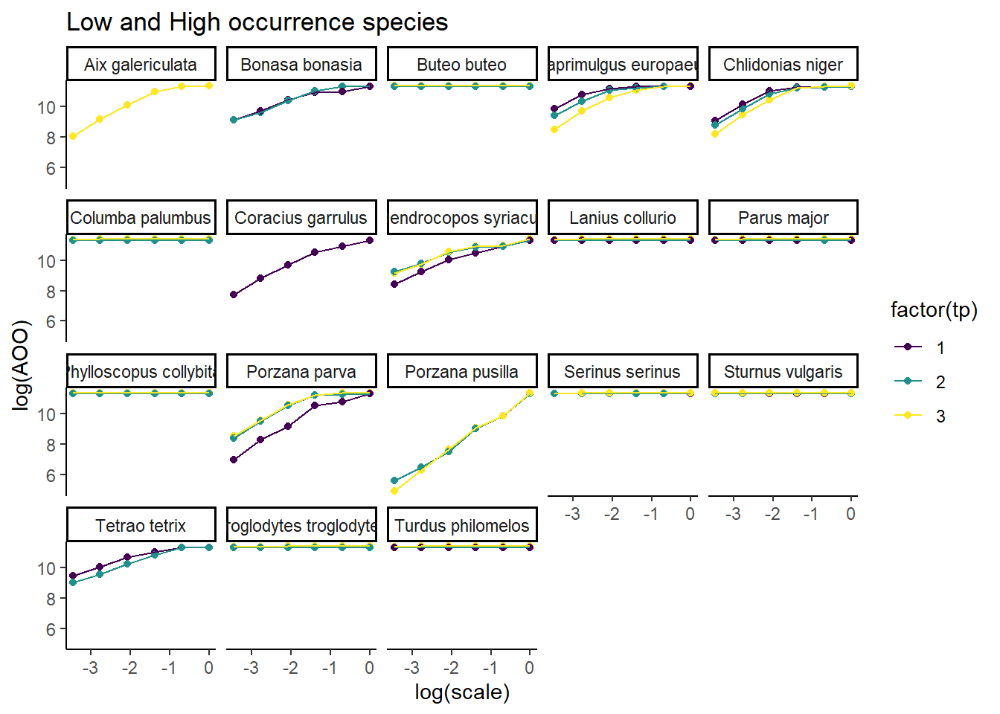
occ_data_full_df %>%
filter(verbatim_name %in% low_occu_sp_sample) %>%
ggplot(aes(y = log(AOO), x = log(scale), col = factor(tp)))+
geom_point()+
geom_line()+
theme_classic()+
facet_wrap(verbatim_name~.)+
scale_color_viridis(discrete = T)+
annotate("text", label = paste(), size = 4, x = 15, y = 5)+
labs(title = "Low occurrence species")Warning: Removed 5 rows containing missing values (`geom_point()`).Warning: Removed 3 rows containing missing values (`geom_line()`).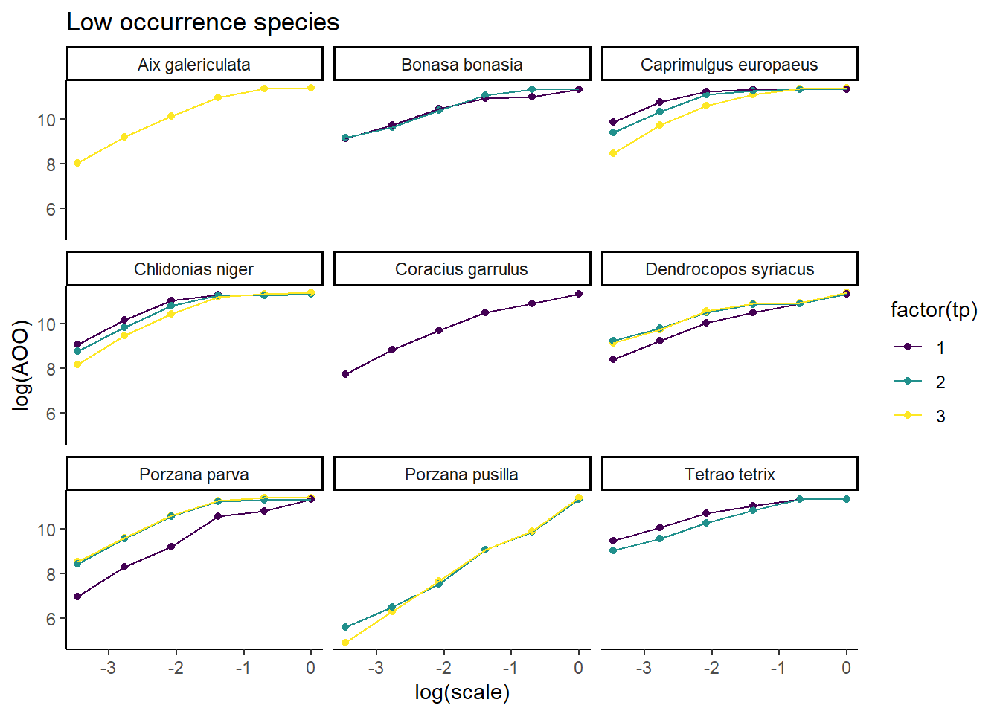
occ_data_full_df %>%
filter(verbatim_name %in% unique(high_occu$verbatim_name)[1:9]) %>%
ggplot(aes(y = log(AOO), x = log(scale), col = factor(tp)))+
geom_point()+
geom_line()+
theme_classic()+
scale_color_viridis(discrete = T)+
facet_wrap(verbatim_name~.)+
annotate("text", label = paste(), size = 4, x = 15, y = 5)+
labs(title = "High occurrence species")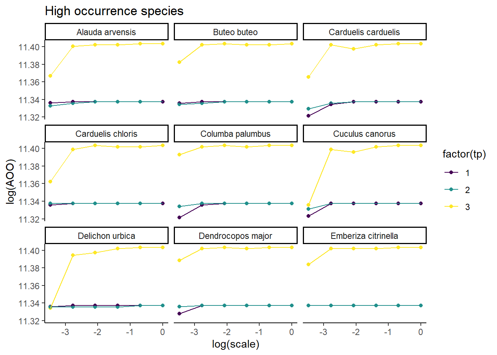
2.1) How does it scale over time?
# Some summary stats:
occ_data_full_df %>%
group_by(cell_grouping, tp, scale) %>%
get_summary_stats(c(relative_occupancy_area, relative_occupancy_Ncells,
occupancy_Ncells, occupancy_area, AOO,
Total_area, Total_Ncells),
type="mean_sd")# A tibble: 126 × 7
tp cell_grouping scale variable n mean sd
<int> <fct> <dbl> <fct> <dbl> <dbl> <dbl>
1 1 cell1grid 0.0312 relative_occupancy_area 65400 0.787 2.42e-1
2 1 cell1grid 0.0312 relative_occupancy_Ncells 65400 0.787 2.43e-1
3 1 cell1grid 0.0312 occupancy_Ncells 65400 494. 1.52e+2
4 1 cell1grid 0.0312 occupancy_area 65400 66024. 2.03e+4
5 1 cell1grid 0.0312 AOO 65400 66024. 2.03e+4
6 1 cell1grid 0.0312 Total_area 65400 83900. 0
7 1 cell1grid 0.0312 Total_Ncells 65400 628 0
8 2 cell1grid 0.0312 relative_occupancy_area 68632 0.8 2.44e-1
9 2 cell1grid 0.0312 relative_occupancy_Ncells 68632 0.8 2.44e-1
10 2 cell1grid 0.0312 occupancy_Ncells 68632 502. 1.53e+2
# ℹ 116 more rowsLet’s look at two example species that have low occupancy and see if we can translate what’s going on from the static patterns. Let’s compare with telfer index of change.
Species 1 : Grus grus (AOO between years differs quite a lot, but AOO increases over the years) Species 2 : Falco vespertinus (occurs only in 2 grid cells in tp1 and tp3 and those grid cells differ a lot)
Results:
Grus grus (temporally increasing species) decreases in D (slope) over time and then increases again in D..
Falco vespertinus (temporally decreasing species) increases in D (slope) over time.
# Example species:
# =========================================================================== #
## one that differs quite a lot in AOO between years:
# this one scales nicely between cell_groupings: 1-4 for both time periods.
# Looks like it is comparable.
# let's see:
s_linear <- c("cell1grid", "cell2grid", "cell4grid", "cell8grid")
occ_data_full_df %>%
filter(verbatim_name == "Grus grus") %>%
unique() %>%
#filter(cell_grouping %in% s_linear) %>%
ggplot(aes(x = log(scale), y = log(AOO), color = factor(tp)))+
geom_point()+
theme_classic()+
geom_line()+
labs(title = "Grus grus")+
scale_color_viridis(discrete=T)
model_df1<- occ_data_full_df %>%
select(verbatim_name, tp, AOO, scale, cell_grouping) %>%
filter(verbatim_name == "Grus grus") %>%
#filter(cell_grouping %in% s_linear) %>%
filter(tp == 1) %>%
unique()
model_df2<- occ_data_full_df %>%
select(verbatim_name, tp, AOO, scale, cell_grouping) %>%
filter(verbatim_name == "Grus grus") %>%
#filter(cell_grouping %in% s_linear) %>%
filter(tp == 2) %>%
unique()
model_df3<- occ_data_full_df %>%
select(verbatim_name, tp, AOO, scale, cell_grouping) %>%
filter(verbatim_name == "Grus grus") %>%
#filter(cell_grouping %in% s_linear) %>%
filter(tp == 3) %>%
unique()
D_Grusgrus <- c(summary(lm(log(AOO)~log(scale), na.action = na.omit,data = model_df1))$coef[2],
summary(lm(log(AOO)~log(scale), na.action = na.omit,data = model_df2))$coef[2],
summary(lm(log(AOO)~log(scale), na.action = na.omit,data = model_df3))$coef[2])
D_df <- data.frame(D = D_Grusgrus, tp = c(1,2,3))
plot(D~tp, D_df)
td<- presence_data_sf %>% filter(verbatim_name == "Grus grus")
ggplot()+
geom_sf(data = td)+
geom_sf(data = grid_list[[1]], fill = 'NA') +
theme_void()+
facet_wrap(tp~.)+
labs(title = "Grus grus", subtitle = paste("D = 1.36, D = 1.27, D = 0.71"))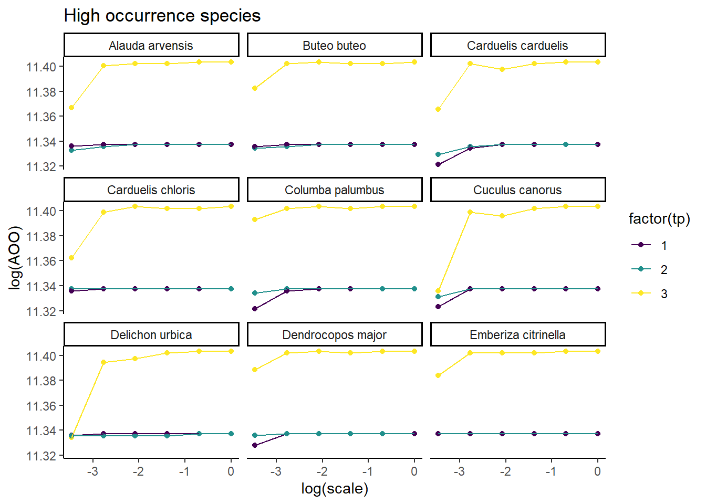
telfer_results %>% filter(taxa == "Grus grus") taxa Nsite_1.x Nsite_2.x Telfer_1_2 Nsite_1.y Nsite_3.x Telfer_1_3
1 Grus grus 18 82 2.317015 18 226 2.629844
Nsite_2.y Nsite_3.y Telfer_2_3
1 82 226 2.323466# Telfer_1_2 = 2.317015 ;
# Telfer_1_3 = 2.629844 ;
# Telfer_2_3 = 2.323466# =========================================================================== #
telfer_results %>% filter(taxa == "Falco vespertinus") taxa Nsite_1.x Nsite_2.x Telfer_1_2 Nsite_1.y Nsite_3.x
1 Falco vespertinus NA NA NA 12 11
Telfer_1_3 Nsite_2.y Nsite_3.y Telfer_2_3
1 -0.6534855 NA NA NA# Telfer_1_3 = -0.6534855
## Another species that has a nice linear relationship until one point
occ_data_full_df %>%
filter(verbatim_name == "Falco vespertinus") %>%
unique() %>%
ggplot(aes(x = log(scale), y = log(AOO), color = factor(tp)))+
geom_point()+
theme_classic()+
geom_line()+
labs(title = "Falco vespertinus")+
scale_color_viridis(discrete=T)Warning: Removed 1 rows containing missing values (`geom_point()`).Warning: Removed 1 row containing missing values (`geom_line()`).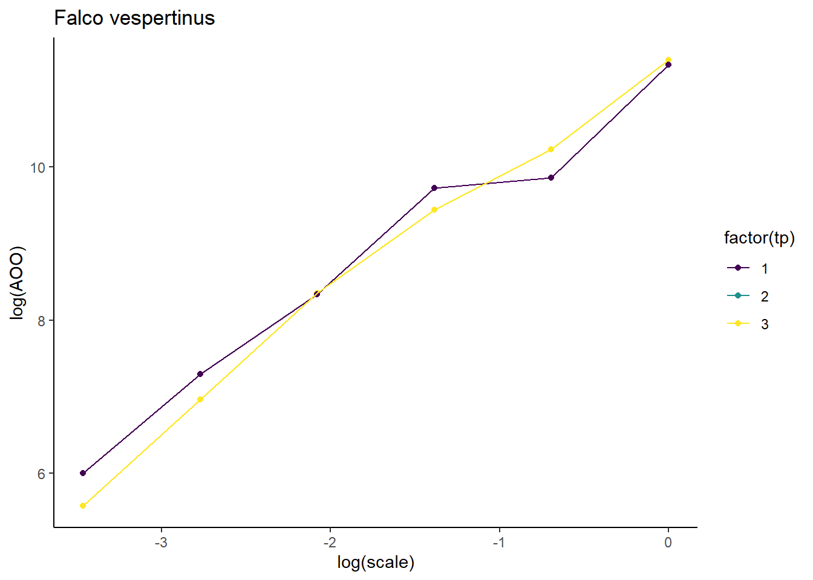
td<- presence_data_sf %>%
filter(verbatim_name == "Falco vespertinus")
ggplot()+
geom_sf(data = td)+
geom_sf(data = grid_list[[1]], fill = 'NA') +
theme_void()+
facet_wrap(tp~.)+
labs(title = "Falco vespertinus")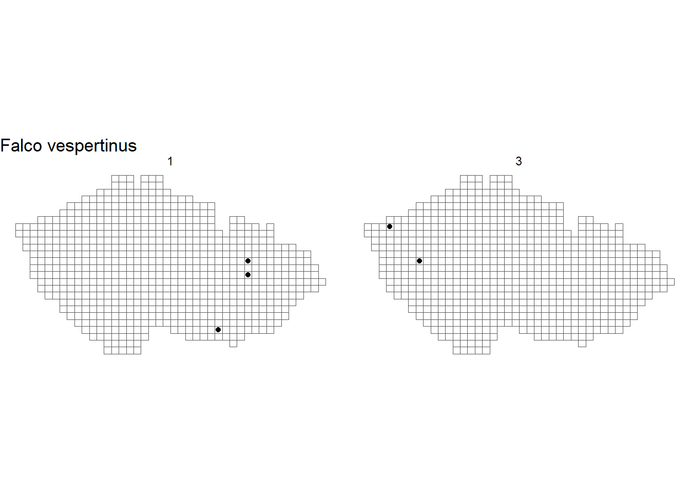
# this one scales nicely between cell_groupings:
# 1-4 for both time periods. Looks like it is comparable.
# let's see:
s_linear <- c("cell1grid", "cell2grid", "cell4grid", "cell8grid")
model_df1<- occ_data_full_df %>%
select(verbatim_name, tp, AOO, scale, cell_grouping) %>%
filter(verbatim_name == "Falco vespertinus") %>%
filter(cell_grouping %in% s_linear) %>%
filter(tp == 1) %>%
unique()
model_df3<- occ_data_full_df %>%
select(verbatim_name, tp, AOO, scale, cell_grouping) %>%
filter(verbatim_name == "Falco vespertinus") %>%
filter(cell_grouping %in% s_linear) %>%
filter(tp == 3) %>%
unique()
summary(lm(log(AOO)~log(scale), na.action = na.omit,data = model_df1))$coef # D = 1.76 Estimate Std. Error t value Pr(>|t|)
(Intercept) 12.122612 0.16980377 71.39189 0.0001961437
log(scale) 1.764758 0.06667376 26.46856 0.0014243305summary(lm(log(AOO)~log(scale), na.action = na.omit,data = model_df3))$coef # D = 1.87 # a bit more a plane than in first time period.. Estimate Std. Error t value Pr(>|t|)
(Intercept) 12.131529 0.18882484 64.24753 0.000242175
log(scale) 1.873069 0.07414242 25.26313 0.001563171D_Falco <- c(summary(lm(log(AOO)~log(scale), na.action = na.omit,data = model_df1))$coef[2],
summary(lm(log(AOO)~log(scale), na.action = na.omit,data = model_df3))$coef[2])
D_df <- data.frame(D = D_Falco, tp = c(1,3))
plot(D~tp, D_df)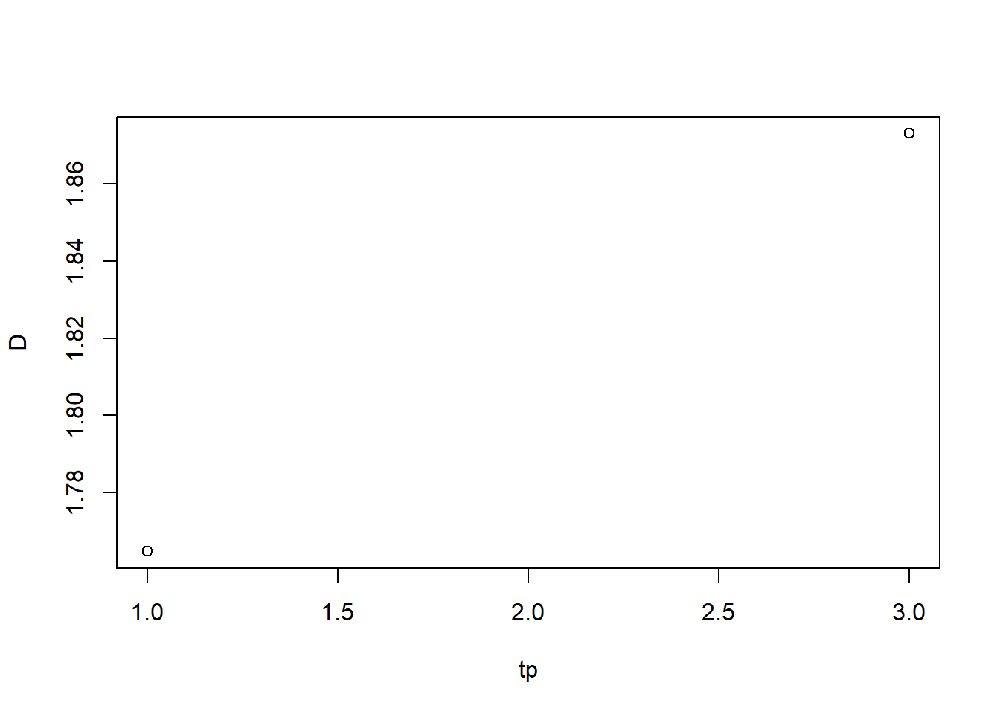
telfer_results %>% filter(taxa == "Falco vespertinus") %>% select(taxa, Nsite_1.y, Nsite_3.x, Telfer_1_3) taxa Nsite_1.y Nsite_3.x Telfer_1_3
1 Falco vespertinus 12 11 -0.6534855# =========================================================================== #occ_data_full_df %>% filter(cell_grouping == "cell1grid") %>%
ggplot() +
geom_boxplot(aes(y = relative_occupancy_area, fill = factor(tp))) + scale_color_viridis(discrete = T)
cols_n <- intersect(names(presence_data), names(occ_data_full_df))
occ_data_full <- unique(merge(presence_data, occ_data_full_df,
by = cols_n,
all.y = T))
# gc()
# save.image("~/GitHub/BEAST_General_Procedures/output/RData/Scale_Area_Curves.RData")D ~ Telfer Plot
# D ~ Telfer Plot ==================================== ####
occ_data_full_df %>% filter(tp == 1) %>%
ggplot() +
geom_point(aes(x = Telfer_1_2, y = D ))+
theme_classic()Warning: Removed 14781 rows containing missing values (`geom_point()`).occ_data_full_df %>% filter(tp == 2) %>%
ggplot() +
geom_point(aes(x = Telfer_2_3, y = D ))+
theme_classic()Warning: Removed 13420 rows containing missing values (`geom_point()`).occ_data_full_df %>% filter(tp == 3) %>%
ggplot() +
geom_point(aes(x = Telfer_1_3, y = D ))+
theme_classic()Warning: Removed 1208 rows containing missing values (`geom_point()`).


D ~ log Ratio of AOO
# Re-formating the data.. there is probably a smoother way to do it..
occ_data_wide1 <- occ_data_full_df %>%
select(verbatim_name, tp, cell_grouping,
D, b, AOO, Total_Ncells,
occupancy_area, occupancy_Ncells,
relative_occupancy_Ncells, relative_occupancy_area) %>%
group_by(verbatim_name, tp) %>%
distinct() %>%
filter(tp == 1) %>%
setNames(paste0('tp1_', names(.))) %>%
ungroup() %>%
select(-c(tp1_tp)) %>%
rename(verbatim_name = tp1_verbatim_name,
cell_grouping = tp1_cell_grouping)
occ_data_wide2 <- occ_data_full_df %>%
select(verbatim_name, tp, cell_grouping,
D, b, AOO, Total_Ncells,
occupancy_area, occupancy_Ncells,
relative_occupancy_Ncells, relative_occupancy_area) %>%
group_by(verbatim_name, tp) %>%
distinct() %>%
filter(tp == 2) %>%
setNames(paste0('tp2_', names(.))) %>%
ungroup() %>%
select(-c(tp2_tp)) %>%
rename(verbatim_name = tp2_verbatim_name,
cell_grouping = tp2_cell_grouping)
occ_data_wide3 <- occ_data_full_df %>%
select(verbatim_name, tp, cell_grouping,
D, b, AOO, Total_Ncells,
occupancy_area, occupancy_Ncells,
relative_occupancy_Ncells, relative_occupancy_area) %>%
group_by(verbatim_name, tp) %>%
distinct() %>%
filter(tp == 3) %>%
setNames(paste0('tp3_', names(.))) %>%
ungroup() %>%
select(-c(tp3_tp)) %>%
rename(verbatim_name = tp3_verbatim_name,
cell_grouping = tp3_cell_grouping)
# merge back together:
temp <- merge(occ_data_wide1, occ_data_wide2,
by=intersect(names(occ_data_wide1), names(occ_data_wide2)))
temp2 <- merge(temp, occ_data_wide3,
by=intersect(names(temp), names(occ_data_wide3)))
names_v <- names(temp2[-(1:2)])
# Transform to wide format by cell_grouping
occ_data_wide <- temp2 %>%
pivot_wider(names_from = cell_grouping,
values_from = all_of(names_v))
occ_data_wide <- occ_data_wide %>%
mutate(log_R1 = log(tp2_AOO_cell1grid/tp1_AOO_cell1grid),
log_R2 = tp2_AOO_cell1grid-tp1_AOO_cell1grid,
log_R1_3 = log(tp3_AOO_cell1grid/tp1_AOO_cell1grid),
log_R2_3 = tp3_AOO_cell1grid-tp1_AOO_cell1grid,
.before = 1) # sort columns to the beginning of the table
# Plots =================================================================== #
occ_data_wide %>%
ggplot(aes(y = log_R1, x =-tp1_D_cell1grid))+
geom_point()+
ylab(expression("log"~ frac("tp2_AOO_cell1grid", "tp1_AOO_cell1grid")))+
xlab("tp1_D")+
geom_smooth(method = "lm", formula = y ~ x, se = T, alpha = 0.5)+
theme_classic()Warning: Removed 25 rows containing non-finite values (`stat_smooth()`).Warning: Removed 25 rows containing missing values (`geom_point()`).
occ_data_wide %>%
ggplot(aes(y = log_R2, x =-tp1_D_cell1grid))+
geom_point()+
xlab("tp1_D")+
ylab("log(tp2_AOO_cell1grid - tp1_AOO_cell1grid)")+
geom_smooth(method = "lm", formula = y ~ x, se = T, alpha = 0.5)+
theme_classic()Warning: Removed 25 rows containing non-finite values (`stat_smooth()`).
Removed 25 rows containing missing values (`geom_point()`).
occ_data_wide %>%
ggplot(aes(y = log_R1_3, x =-tp1_D_cell1grid))+
geom_point()+
ylab(expression("log"~ frac("tp2_AOO_cell1grid", "tp1_AOO_cell1grid")))+
xlab("tp1_D")+
geom_smooth(method = "lm", formula = y ~ x, se = T, alpha = 0.5)+
theme_classic()Warning: Removed 25 rows containing non-finite values (`stat_smooth()`).
Removed 25 rows containing missing values (`geom_point()`).
occ_data_wide %>%
ggplot(aes(y = log_R2_3, x =-tp1_D_cell1grid))+
geom_point()+
xlab("tp1_D")+
ylab("log(tp2_AOO_cell1grid - tp1_AOO_cell1grid)")+
geom_smooth(method = "lm", formula = y ~ x, se = T, alpha = 0.5)+
theme_classic()Warning: Removed 25 rows containing non-finite values (`stat_smooth()`).
Removed 25 rows containing missing values (`geom_point()`).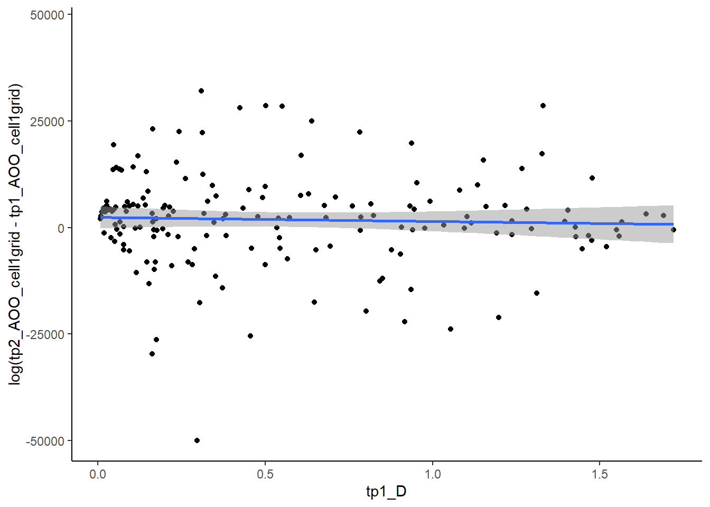
Correlograms
# Correlation plots =================================== ##
# library("PerformanceAnalytics")
my_data <- occ_data_full_df %>%
select(tp, scale, area_sampled,
occupancy_area, occupancy_Ncells,
AOO, relative_occupancy_area, relative_occupancy_Ncells,
D, m, b, r2,
Telfer_1_2, Telfer_2_3, Telfer_1_3) %>%
distinct(D, .keep_all = T)
# with GGally ========
library(GGally)
#pdf(paste0(out_path, "Figs/Corrplot_D_Telfer.pdf"), width = "117", height = "165")
my_data$tp <- as.factor(my_data$tp)
my_data %>% filter(scale == 0.03125 ) %>%
ggpairs(mapping = aes(color = tp, alpha = 0.25),
columns = c("occupancy_area", "occupancy_Ncells",
"AOO", "relative_occupancy_area",
"m", "b",
"Telfer_1_2", "Telfer_2_3", "Telfer_1_3"),
upper = list(continuous = wrap("density", alpha = 0.5),
combo = "box_no_facet"),
lower = list(continuous = wrap("points", alpha = 0.3),
combo = wrap("dot_no_facet", alpha = 0.4)),)+
scale_color_viridis(discrete = T)+
scale_fill_viridis(discrete = T)
#dev.off()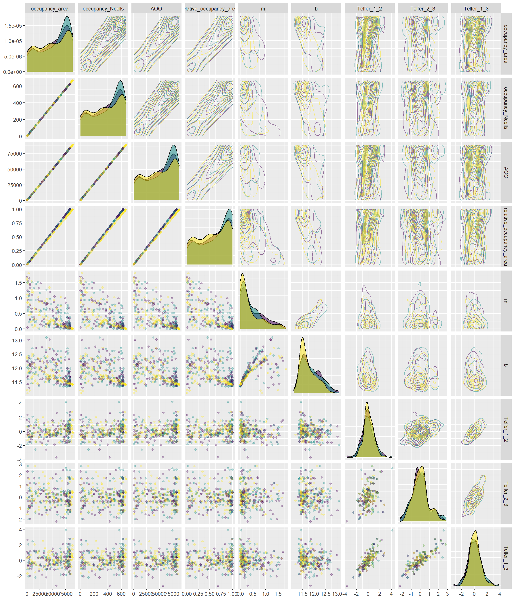
#par(mfrow=c(4,4))
p_list[1:16][[1]]
[[2]]
[[3]]
[[4]]
[[5]]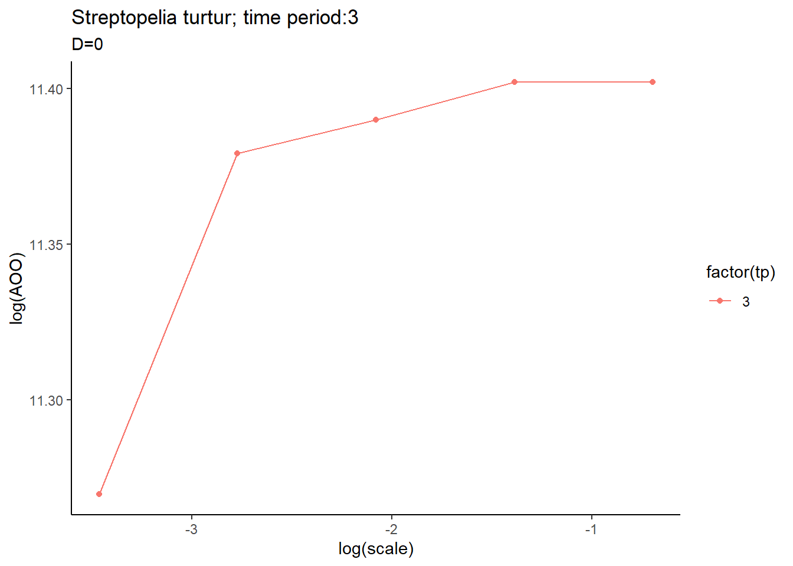
[[6]]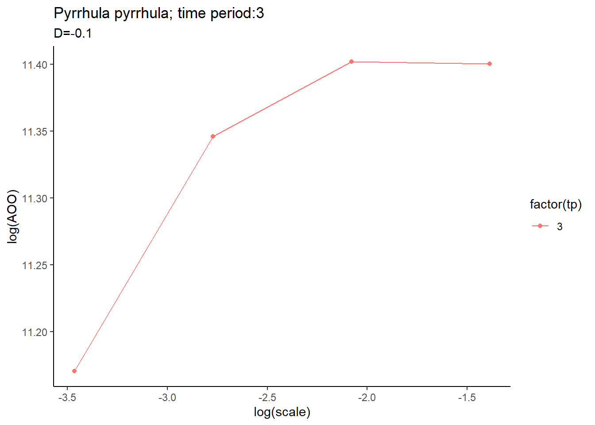
[[7]]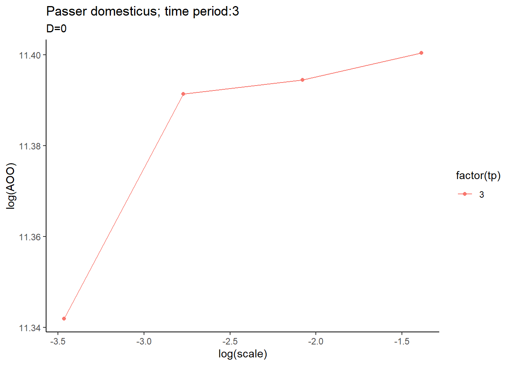
[[8]]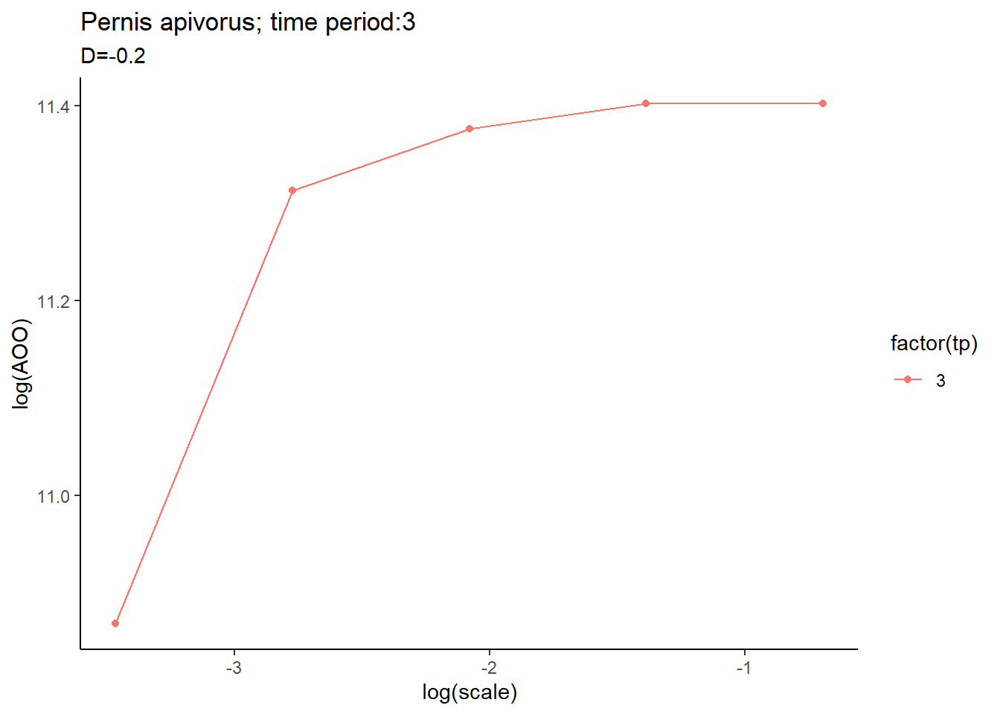
[[9]]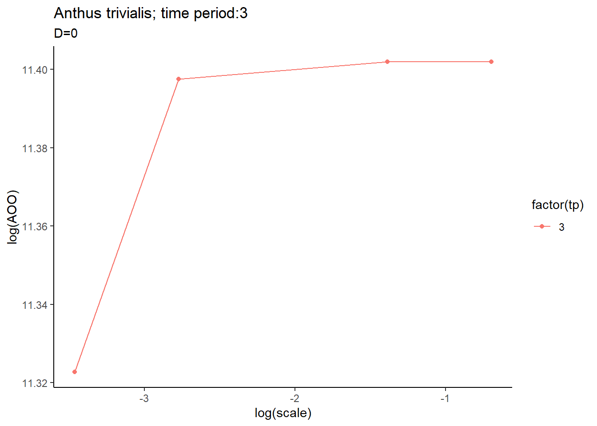
[[10]]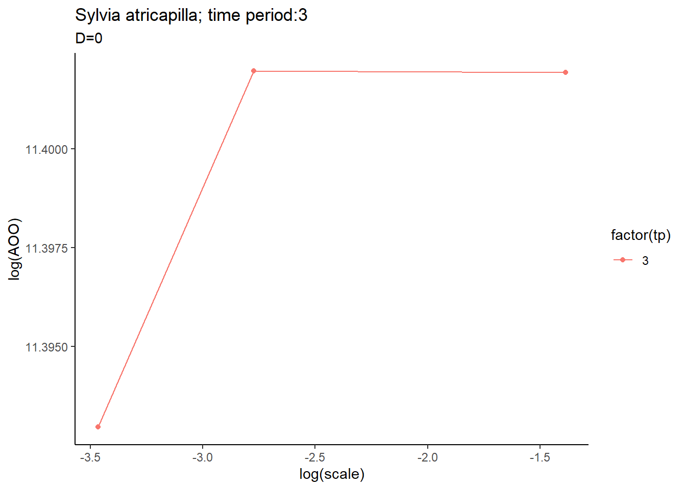
[[11]]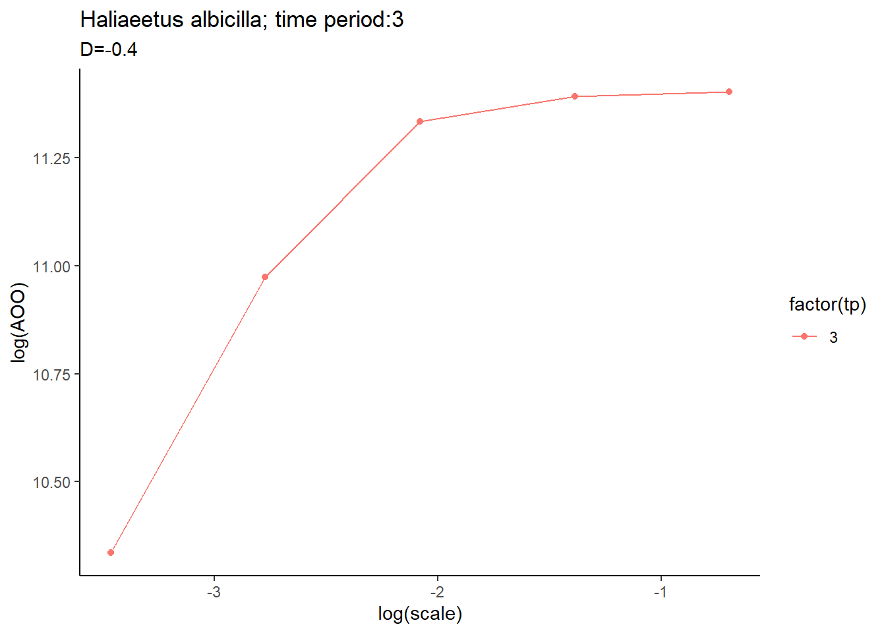
[[12]]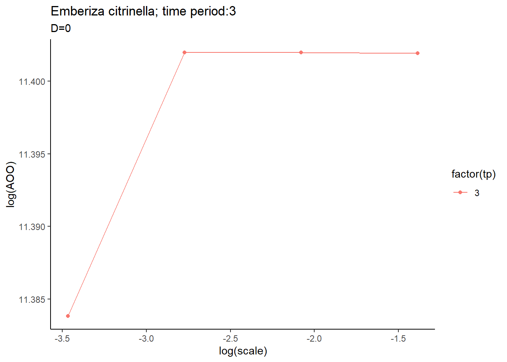
[[13]]
[[14]]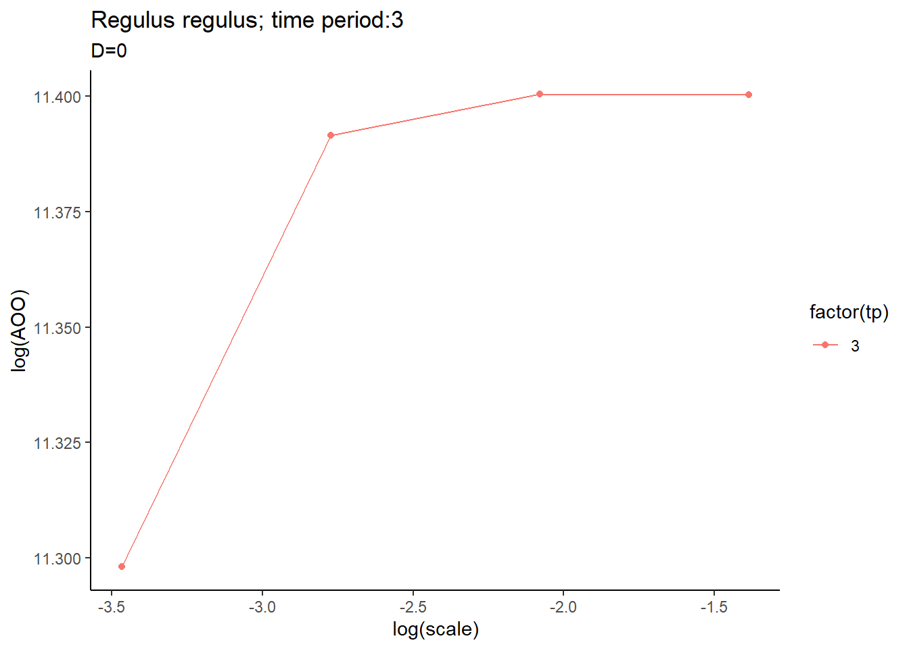
[[15]]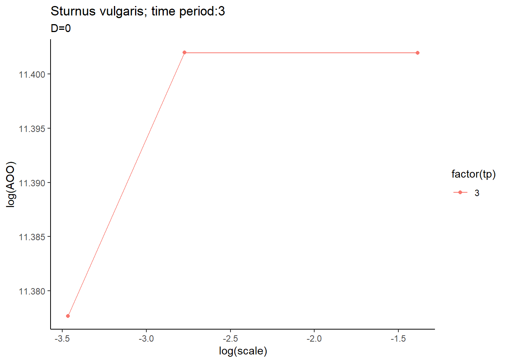
[[16]]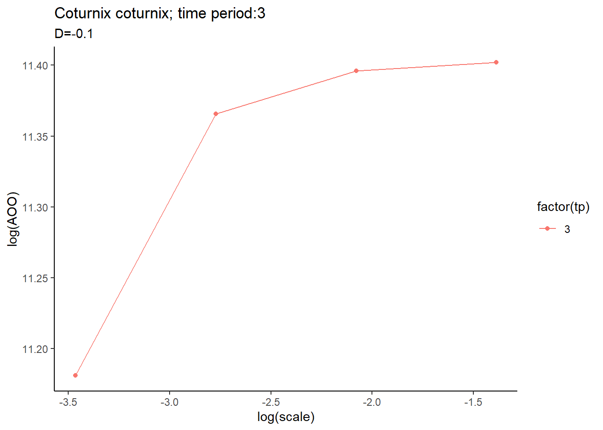
# Plots =============================================== ####
#
occ_data_full_df %>%
filter(verbatim_name %in% high_occu$verbatim_name) %>%
ggplot(aes(y=log(AOO), x = log(scale), color = verbatim_name)) +
geom_point(show.legend = F)+
geom_line(aes(group = verbatim_name), show.legend = F)+
facet_wrap(tp~.)+
theme(legend.position = "none") +
theme_classic()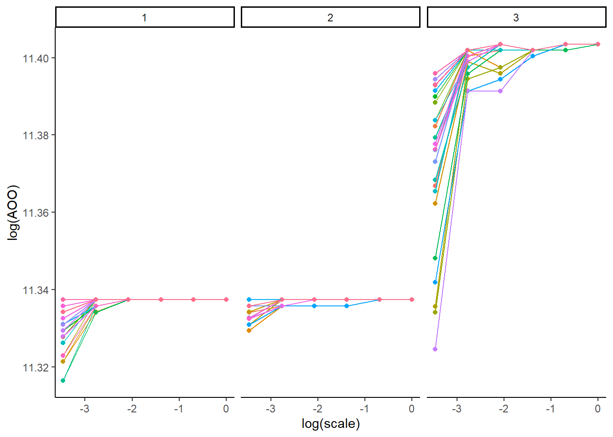
# dd %>% filter(cell_grouping == "cell1grid") %>%
# ggplot(aes(x = occupancy_Ncells)) +
# geom_histogram(bins = 20, bg = "lightgrey", col = "darkgrey")+
# facet_wrap(tp~.)+
# theme_classic()
# save.image("~/GitHub/BEAST_General_Procedures/output/RData/Scale_Area_Curves.RData")